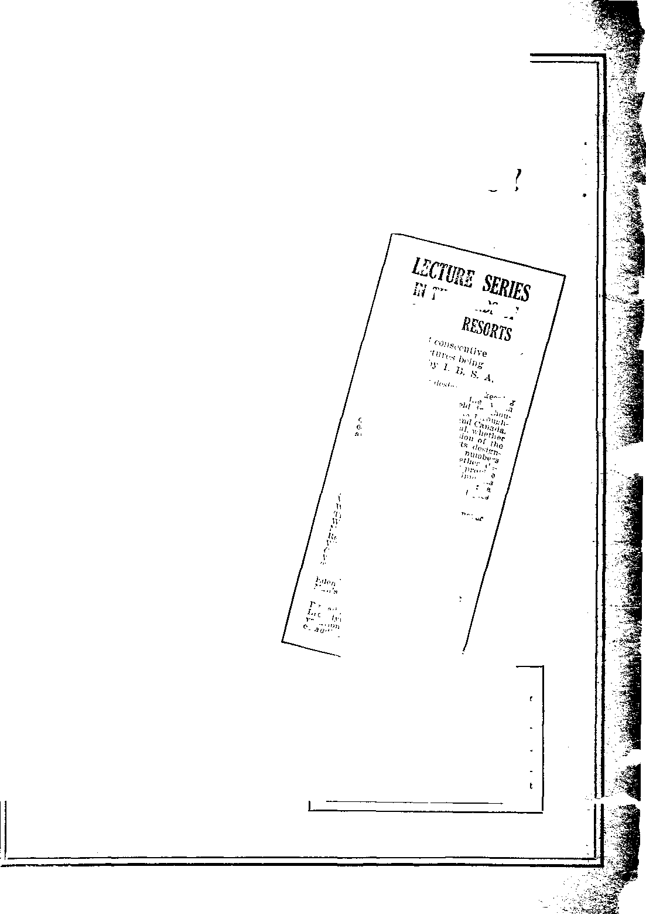

Aug. 2,1922, Vol. in, No. 75
Published every other week at IS Coneord Street, Brooklyn, N. Y., U. S. A,
Five Cents a Copy—$1.00 a Year Canada end Foreign Countries. *1.60
VOLUME 3 WEDNESDAY, AUGUST 2, 1022 NlUITSEa 75
CONTENTS of the GOLDEN AGE
LABOR AND ECONOMICS
EstfiHixhinjr l’ion Cost I Uvib’UIi i n;r a — - - G$3
IhH ? i’.'c VjiIii” ...............J',I'.' "'I r : 11: i • • ’: I.
W?j i' ■ '■ Service..... . ... i; I ;■ fv lim! Pofil.'iLf]
Labor-Saving Machinery G-J I’rii-e
SOs I AL AND Ei;-..
Striking ;d f-.e ...................
^'ToCi'r^AG Ah.’;
Il 11 V'S't.i 111 i t -;; (>;i ?~il' \ 1; i k j i ......................... ....................... 1, i , J
NN'0.11 r 1 <• i* i; i J Ari: Silk's _______________________________________._________ ..li’tG
nv.n't :e—comm ;::zr at ion
rOiJTIC.A L— iX)r.L/J !C AND EOkEICN
A ......................................... .......
CtGKlii irsiu- in 1,11';: jny ......—..........................................GS^
MoihNi।:;.t v.ilii i’ip Conrts
Criminals in ........................................................—(5tlG
HO’.fE ANO EFALTII
Whole Wheat Saves Iricuii' Bi Ns __________________.____________
RELIGION
Bc-I;aion mi the Vc.on ......G’H
A It; !v G: ‘J?eW.':i(>11 nn the Arnon” ....... G!U
Empty SiffiLK'hs I’roiii
God’s 1’lan Is l'ra':T<’l-s'iVi‘ Oi'l Gf.W- to Church y 'Ui.v? Gb!i Clergy always PolitiraJ GP(i ('Times of 1ho Clergy .... G!>7 Ctergy KdbJuvc the People GOV
T” 1 'v: WilY
Term i’ha-.i's of Idolatry G'.>9
Wui'.-hip ..I' l'al-r Gods 700
On:..' Si-in of S ihi-li l.iicn-k:
“•h'-h riifl 1 m-rtv.'sed vi'h
i iso-:s" ____________ . .. ... ..A(J2
£i"'ii«'S in (Iio ''Harp uf
God” —_______________^._703
fff&hsticit ewTF IVednesday at 13 CattoM Street,, B-o >klyr. N, Y......I), S. A
toy WOODWOBTH, HUDGING8 and MARTIN CLAYTON ,]. WOODWORTH .......Edtttf
ROBEKT I. -MARTIN .... Business M*nag« WM. F. HUPGINGS......Scc’y and Treia.
Conariuers and prx^rtetora. Address: 18 Concord Street, Brooklyn, N. Y......U, S. A.
Five Cent4* a Copy — Bl,00 A Yeas foreign ofihce.s : 2?rittsh ; 34 Craven Terrace, Lancaster Gntc, London W. 2; Oanadinn : 270 Dundas St. W„ Tornillo, Ontario ; QtaOrtn : 495 Collins St.. Melbourne, Australia. Make remittances to The Golden Ape Entered r.s second-class mutter nt Brooklyn, N. X« todvr the Act of March 3, 1870.
Notes on the Silk Industry
rPHE history of the silk industry reaches back to Queen Sie Lang Chi, of China, who is supposed to have reigned about 2,000 B. C. This lady found some cocoons of the silkworm and conceived the idea of a gown made of the fine, glossy, tough fibres. The result was so pleasing that the industry became proniptly established.
For centuries Chinese silks found th-nir way into Europe by caravans and were highly prized. The Chinese guarded jealously the secret of their manufacture; but it was finally discovered by two Armenian priests (sent there for the purpose by big business), who brought back to Armenia a quantity of mulberry seeds and silkworm-moth eggs. From Armenia the culture soon spread to other oriental countries and to those bordering on the Mediterranean.
At the present time Japan is the greatest silk-producing country, China is second, the Eastern Mediterranean region is third, Italy is fourth, and France is a bad fifth. The total yield for the world in the year 1919 is estimated at sixty million pounds. In that year the United States imported $400,000,000 worth of silk. At that time Japan was not only leading in the silk industry, hut hade fair to beat Germany in the manufacture of the cheap goods for which Germany has become famous.
The silk business received a severe jolt in the early summer of 1920. During the three years previous it had been a mint for everybody connected with it, whether he had any knowledge' of the business or not. In some districts in New York, as fast as the saloons were closed under the Volstead Act they were reopened by silk jobbers, all of whom did a rushing business. The demand was insatiable, and there seemed to be no limit to the price the public would pay. At about that time a silk importer who had already made a large fortune, went to Japan and purchased $1,000,000 worth of habitui silk. But by the time the silk reached America, the bottom had dropped out of the inflated market; and his purchases sold for only half what he had paid for them. The wholesale price of $18 a pound for raw silk in Japan in January, 1920, was only $8 in July, 1920; and jobbers who a few months previous had been turning down orders were offering their stocks at retail at less than the wholesale price. It was nine months after the break before there was any considerable resumption of activity in the silk-mills of the country, and even now business in this line is poor. And this is true of all businesses.
The Textile Worker reports that American silk markets have been flooded with poorly-made silk, manufactured by the new companies that sprang up during the war. Such efficiency has been achieved in the finishing of silk that fabrics which are less than half silk look so much like the real article that only a trained expert can tell the difference.
Improvements in Silk-Making
^PHE Chinese, who are among the cleverest merchants of the w o r 1 d, have recently strengthened their hold upon the American and French markets by shipping their silk in a better condition than heretofore. The silk has been re-r<'ol(‘d, and many of the fine ends and weak spots removed, thus rendering it more adaptable' for weaving. American capitalists approve this innovation, because it does away with a certain amount of high-priced American labor, and places the work where it can he done by capable workers who expect and receive but $10 per month. Every American manufacturer who is striving for cheaper and ever cheaper labor is helping to drive the silk business and myriads of other businesses to the wall. People that get wages of $10 per month can buy rice sufficient to keep alive, and little else—certainly no silk. Good wages mean good buyers. Good buyers mean good business, with prosperity in every direction; but poor wages mean poor business.
In New Orleans, Dr. Vartain K. Osigian, an Armenian-American, whose ancestors have been in the silk business for seven centuries, has developed a new typo of silkworm which is twice the size of the ordinary silkworm and produces 1,800 yards of silk to the cocoon as compared with 1,000 yards, the normal production.
The new type of silkworm is obtained through the grafting of mulberry shoots on osage-orange roots, producing a larger, fleshier leaf, of greater food value. By special treatment of the silkworm’s food. Dr. Osigian has succeeded also in producing silk of eighteen different colors, direct from the cocoons, thus doing away witli the interference caused by artificial dyes.
Dr. Osigian now has the largest silk farm in the world; and instead of one crop of silkworms a year as is the custom abroad, eight crops have been produced. With plenty of equipment one person can care for about 100,000 silkworms.
On Dr. Osigian’s farm the silkworms occupy three days in spinning their cocoons. The worm winds the fiber around and around himself in one continuous thread, at the rate of about a foot a minute, from the outside in. The expert silk-weaver, finding the end at which the worm began to weave, can unwind the entire cocoon.
It is said that-Luther Burbank lias announced a contract with G. Imai, one of the world's largest raw-silk producers, to produce a mulberry bush more compact than the one now in general use and more rapid in growth and heavier in foliage.
Wonderful Artificial Silks
THE chemists are transforming the world.
Now they are even jealous of the silkworm, and cannot let him alone in the solemn task, which he does so well, of winding for himself such a beautiful, shimmery, water-tight shroud. In fact, they are making the silkworm an excrescence on the body politic.
There are three principal methods of making artificial silk, each of which is a chemical achievement. The first is made from raw or waste cotton by what is called the Chardonnet process, and is called cellulose-nitrate silk. The second is made from the same materials by the use of cuproammonhim, and is called cuproam-monium silk.
The third is made chiefly of spruce wood and 'A is calk'd viscose silk. This is the most impor-taut and widely used artificial silk. Many mil- ~ lions of pounds of this kind of silk are turned v out in the I United States yearly. It'has a great- 3 er lustre than real silk and is for that reason < seldom used as an adulterant for real silk. The mild nature of the chemical reactions to which it has been subjected causes the fibre to be much"^ less disintegrated than in any other artificialsilk process. The superior lustre is due to the curious shape of t-he cross-section of the fila-meats.
Hosiery is the principal knit-goods line in J which art ilieial silk has been used; but it 13 coming into more general use for shawls, caps, sweaters, knitted and woven neckties, braids - j and trimmings, embroideries, laces, imitation furs, tapestries, and imitation oriental silkrugs. Fifteen million pairs of “silk” stockings are now made annually from wooden silk, and many shirts sold to American consumers are as thoroughly wooden as a kitchen chair. ' ^|
The spruce wood is reduced to a pulp which.
makes it look and act like molasses. This mo- ? lasses-like pulp is strained through a fine screen, the strings dropping into a solution J which transforms them into yarn thread. This yarn takes the dye readily, is as strong as any J silkworm silk, and wyears well. At first it was highly inflammable, but the chemists have now .Jy overcome this. Caustic soda and carbon disulfid art1 Ilie principal chemicals used in transform- ? ing the cellulose into silk.
rflio spruce wood comes into the silk-plant ;; bleached, at about $G() per ton, and goes out as 3 silk at the rate of about $8,000 per ton. The viscose silk is supplanting real silk for insula- J tion and for making incandescent mantles. Some ' five thousand persons in the United States are 1 now engaged in the viscose-silk industry. The cost of tli.o product is about half that of natural ? silk. The industry was brought to America from n Belgium by the Du Ponts, and is located at one .. A of the war munition plants, at Hopewell, Va.
A new kind of paper fabric is being manufactured in Japan. It is a composition of silk and paper, called “paper silk.” It looks like the best mercerized cotton and is suitable for making blouses, sheetings, and dress materials. . ,
A Socialist Theocracy By 0. L. Rosenkrans, Jr.
* THE sporadic agitation of clergymen to revive Sunday observance on an extensive scale appeals to the average man of today as sheer futility; for public sentiment is distinctly apathetic concerning church-going. In fact, theology has been steadily losing ground for a generation, until in these post-war times its disrepute is not to be ignored. Such religious sentiment as still lingers in our world tends increasingly to favor what Herbert George Wells entities the "religion of the new thought.”
This “renascent religion” Mr. Wells undertakes to explain in his book “God the Invisible King.” It is, he magniloquently proclaims, the worship of the true God, whose proselytes are drawn from every religious system extant, every race and nation of man, and every walk in life. It is a religion without a founder, depending on no mysteries, no authority, no revelation, being the response of the sincere truth-seeker’s heart to the “still, small voice within.” Whoever experiences this perception of the true God is moved to consecrate his all to His service. As more and more people come to recognize His divine nature, the great majority will devote their lives to Him recognizing Him as the invisible King of all the earth, and all humanity will become His priesthood. His service means subordination of personal ambitions to the public weal. When His worship is established universally, all existing imperfect systems of government will have disappeared; there will remain only one government and one system of society and a world-wide Socialist Theocracy.
We know that Mr. Wells is both a Socialist and a very brilliant thinker, and certainly in this instance his genius has unerringly detected the great defect of Socialism — the need of a spiritual impulse to vitalize it. This Mr. Wells supplies by inspiring its adherents with religious zeal. Though Socialism has been termed "properly a religion,” such designation of it has been a misnomer; for it is antagonistic to religion. But couple religious fervor with the revolutionary spirit which is pervading the earth, and the two become irresistible. Mr. Wells is a keen observer of current tendencies, though not always a reliable prophet. In order to determine what the probabilities are of this Socialistic theocracy of his coming to pass, let us examine a little into the tenets of this “religion of modernity” he discourses on and satisfy ourselves respecting its adaptability to the current requirements; for unless it really gives expression to the latent yearnings of the majority of latter-day people it is unlikely to make much headway.
At a first glance the "renascent religion” would seem to embody ideas and aims in accordance with those of Christian believers. It expects a kingdom of God, governed by an invisible King, whom the author styles “God-as-Christ”; it predicts the end of the reign of selfishness, and foretells an ultimate “conquest of death.” But Mr. Wells is careful to disabuse our minds of the opinion that the promised invisible kingdom will be under the auspices of Christianity. He frankly notifies us that he considers the Bible a mass of antique nonsense, and that his god is not its god. His god, whom he calls “God-as-Christ” or the Redeemer and more often the “God of the Human Heart,” he is willing to recognize in Krishna, Buddha, or Quetzalcoatl, but not in the person of "the man Jesus.” Indeed, he refers to the “mistaken identification of the latter with the theological Christ,” as if Jesus were an imposture of the Christ-hope long latent in the heart of man. Again, he insists on assuming that the triune God of ecclesiasticism is necessarily the God of Christian belief, and that to repudiate the three-in-one is equivalent to abjuring the Bible altogether. Finally, he informs us that various heretical sects, such as the Paulicians, Albigenses, Manicheans, and sundry heathen religious like Zoroastrianism, regarded God the Father as the evil principle against whom God the Son is perpetually in rebellion in a vital struggle to deliver mankind from the law of death.
This latter view, which is certainly unscrip-tural, peculiarly appeals to our author as the long hidden truth, the mysterious key to the phenomena of existence. Hence he proceeds to elaborate his distinction between God-as-Na-ture or the Creator, and God-as-Christ. The former he describes as an inscrutable “veiled being,” beyond the limits of human understanding, “enigmatical and incomprehensible,” neither beneficent nor malignant,“knowing nothing of good or evil,” “brooding eternally in a great stillness.” He sets in motion the laws of existence and is sublimely indifferent concerning the welfare of his creatures. But not so God-the-Redeemer who is “our friend and brother and the light of the world,” who “is thought and steadfast will,” who “by our poor scales of measurement” is “boundless love and boundless generosity,” who “works in men and through men,” and has been called the “Life Force, the Will to Live, the Struggle for Existence, Mother Nature.” This is a finite god, not omniscient, but increasing in knowledge and perfection as humanity grows; a kind of personified soul of the human race, the “Will to Be” against every adverse pressure of nature.
This god is “aware of itself not as a whole but dispersedly as individual self-consciousness, starting out dispersedly from every one of the sentient creatures it has called into being,” to live with us and comfort our prayers, to die with us individually, merging us into its consciousness at the death-pang. Originally it was an emanation from the veiled being with whom it is in perpetual conflict. The author supposes it to correspond with the Demiurge of the Gnostics; but obviously it is, in a sense, a plagiarizing of the Christian thought regarding the Logos. It is, says Wells, the “god whom men have sought and found in all ages as the Messiah or Savior,” as distinguished from the infinite Creator. The attempt to reconcile these two opposing conceptions he considers to underlie all the religious activity of the centuries preceding the “violent crystallization of religious belief into the Nicene Creed.”
The writer suspects this “renascent religion” to be one of the most diabolically insidious perversions of truth that has ever been perpetrated. It is as if Satan, realizing the growing restlessness of mankind under antique theological restraints and formulae and groping vaguely upward toward the light, cunningly resolves to divert and frustrate the efforts toward enlightenment by posing as the enlightener. Discerning the popular disillusionment respecting theology and its triune God, Satan now advances as the champion of the anti-Trinitarians, denouncing with virtuous indignation his own pet system while impudently pretending the same to be the real Christianity. First he foisted this atrocity onto the Christian creed and then used it for an argument against the Bible, condemning the Holy Book because of the errors he himself introduced into it. So we are reminded of the “Hebrew-Christian God of Nicma,” which trails after it “1000 misconceptions and bad as-
sociations,” who is vindictive, jealous, spiteful, revengeful, and yet who rebukes these faults. This exponent of a new religion, presuming oh-a sympathetic audience, proceeds, as it were, to ent capers and finger the nose, alluding contemptuously to the Christian deity as a “magic god, very great medicine in battle,” ingeniously represented by early missionaries as being so all-powerful that it was futile for any other god to attempt to cope with Him. Doubtless the idea of divine omnipotence is distasteful to this world and its god! Faith in the divine inspiration of Holy Writ is sneered at as Bibliolatry, and we are informed how the “idea of textual inspiration presently swamped textual inter- ■ p rotation.”
But why concede disinterested purity of mo-fives to the apostles and deride the gospels they composed ? Why should the apparent harshness of Jehovah he censured.while complacently lik-eniug the “God of the Human Heart” to a general who unlliachingly sent his soldiers to torture and death? The mercy of Jehovah makes .
provision for a compensation for the victims .. who serve as examples; the servants of Mr. Well's god perish unrequited. Their devotion and self-sacrifice, while affording manifest enjoyment to this “God of Youth,” receives no guerdon from him.
Though the latter god is depicted as “boundless love,” the author scorns the implication of his being humble or compassionate. They of the new thought religion, he declares, cannot tolerate a “pitiful God.” “The accepted figure of Je- 1 sus, instinct ■with meek submission,” is not the tone of their worship. Death is conquered, not by submission, but by fighting; so he would represent his god’s image with one hand torn loose from the cross and eyes turned defiantly to the sky. Yet how paltry is such puny defiance of fate, such impotent rage at the irresistible, like that of any cornered rat, compared with the sublime self-abnegation of Jesus and His unfaltering trust in the benign purpose of His Father! When we consider the career of the Nazarene, unparalleled in human annals, what puerile vaunting it seems to proclaim the modernist Redeemer “a rebel, like Prometheus.”
According to the new religionists the Father is Creator of both good and evil, and therefore intrinsically incapable of discriminating between his two balancing forces in the law of
nature in favor of one against the other. Cold and unmerciful, he formulates inexorable laws wliich must be disobeyed and broken for the salvation of humanity. He is not, like Jehovah, the everlastingly wise author of His own plan of salvation. So the Redeemer breaks the power of death, not by obedient submission, but by unfilial challenging of the source of all power. It is not Christ, but Lucifer. Such a being we may expect to find tolerant of moral turpitude, and so we are assured that he is. The God of Youth meets both good and evil with kindly sympathy; for his nature comprehends both good and evil. Evidently the author is obtuse to the merit of the ransom and the atonement, since he disdains any allusion to Adam’s fall. If virtue exists in rebellion, disobedience could be no sin. So through the modernists wo achieve a new viewpoint on the curse—a Satanic viewpoint.
Having now arrived at a wholly up-to-date conception of the Redeemer, the perplexed truth-seeker is fain to inquire what office he performs in individual human destiny. We are instructed that the finding of him is salvation; but salvation from what? From personal death? Not at all. Immortality is excluded from the field of religious discussion; it is a “question for the psychologists.” Inferentially, if Spiritism amuses one, the same may be indulged in as a harmless pastime; the foibles of a literary contemporary should not be chided unduly. After all, personal death is a matter of slight consequence; and anxiety concerning the same impresses our author as egregious egotism, exciting his philosophic amazement.
Probably a person enjoying a fair measure of health, worldly goods, fame, education, social advantages- travel, contact with the prominent ones of the world, might, out of the fullness of present comforts, regard the future with indifference. But an altruistic solicitude concerning posterity affords scant compensation for the woes and miseries and heart-breakings of this life to the diseased slum-dweller whose habitat is a filthy back-tenement overlooking a fetid alley, and who subsists on polluted rubbish; or to the blind mendicant who mutely invites your charity. Nevertheless, we are exhorted to confine our aspirations toward a hereafter to the prospect of perpetual life for the species Homo, and to the progress in electrical inventions which will sometime enable mankind to arrest the cooling-off process of our planet, beneath a cooling sun. Evidently this book was written before scientists had decided that there is indium enough in the earth to supply it with heat and power indefinitely. If, then, this new-thought god cannot deliver us from personal death; if our prayers to him do not suffice to avert accident and misfortune; if morality is a question of expediency; in what consists this salvation that the finding of this god insures? We are solemnly answered that it is “salvation from the purposelessness of life.” Bathos! Some already have found the same in a steady job, home ties, business cares, political ambitions, art or sports. Perhaps this god may save the bored roue from ennui, or the author from a dilemma.
It is palpable that this redeemer and his salvation are very different from those of the Scriptures. Our author admits as much, but nevertheless holds out an elusive hope to lukewarm apostates that maybe, after all, the Savior of their faith was really this new-found deity, only never properly presented to them and understood by them before. He explains that “the new religion has but disentangled the idea of him from the absolutes and infinities and mysteries of Christian theologians; from mythological virgin births and the cosmogonies and intellectual pretentiousness of a vanished age”-—in other words, has divorced him from the Bible. Instead of a harmonious divine plan we are offered the contradictory testimony of scientists, a haphazard universe, a scheme of existence devoid of the logical sequence of events. We are forbidden to cherish the hope of a hereafter, or of compensation for present 1 woe. Personal sin is a bugbear. There is to be no righting of individual wrongs. Instead of this we are admonished to look for an Ultimate Good for remote posterity, accomplished by a personified human hope, who learns through the progress of human knowledge. There is substituted a temporal god preaching the gospel of Satan, teaching mankind to rely on itself to work out its own destiny, including the eventual elimination of disease and death, presumably through the progressive development of psychic powers. The author declares that the god of modernity stands alone, conceding nothing to Caesar. This is mere empty bombast; for Cfnsar typifies the powers-that-be, vb■ Uht regal, bourgeois, or bolshevik. He envisions a Socialist theocracy with all humanity consecrated to the service of his god, and, by inference, all .-non-conformists rated as criminals against society, amenable to prosecution and punishment, whereby the new government automatically becomes C’lesar; it is the Dragon masquerading in the Lamb’s skin.
It is obvious to all Bible Students that the god of the “religion of the new thought” is the god of this world, Satan. Aware of the disruptive tendencies of today, pointing toward the imminent collapse of present governments, he is preparing to desert his erstwhile proteges, and ally himself with the “beastly” revolutionary powers soon to be established, hoping to so organize and consolidate the same as to insure their perpetuity, thus prolonging his own dominion. In the example of Russia we are wit
ness to what unbridled intolerance, fanaticism, and ruthlessness Communism is responsible for. Extend the same throughout the world as a universal Socialist Theocracy, and the power of Satan would be measurably enhanced. It is written that in the last days he will have “all power”; and with the vast majority of mankind abnegating their wills in consecration to his service, perhaps this is what Satan plans to bring about. Then would that Wicked be indeed revealed. '
But his triumph will be evanescent, and a prelude merely to his complete overthrow; for the true Lord of lords is soon to set up His dominion in the earth, and nothing can withstand His might, hacked as it is by the whole power of the universe. Satan’s kingdom will crumble into dust, disappearing forever, and with it every Utopian dream of a Socialist Theocracy.
IN ALMOST every farm, labor, and livestock paper there are suggestions and plans for correcting our present social difficulties. These ideas differ so materially that it is evident that some have looked only at one feature of the trouble, and that few have gone to the root of the matter. Under our form of government, to correct an evil that is nation-wide it is necessary first to locate the cause, then to devise a remedy that is at once plain and practical and, like all truth, easy to understand. Then the plan must be submitted to the people; and at least a majority must favor it, in order to get results.
The voice of the people, however, is scarcely audible. Their representatives seldom know what their wishes are because most of the questions come up after election. On the other hand, the opposing interests of big business are carefully looked after from day to day by the shrewdest lawyers. This is why a very small minority get what they want, and why a very large majority turn it all over to them. Few (a small minority) will deny that our trouble is due to the ease with which large fortunes are acquired, to their wrong use in controlling living prices, speculation, profiteering, and the displacement of labor by machinery.
Price fluctuation alone is responsible for speculation. Unequal prices, though permanent, would admit of profiteering. It is evident that if prices were stable and equal, it would be impossible to speculate or to profiteer. So to correct these evils it is necessary to establish prices on a just basis. But before we can establish prices, we must determine our profit; for if we believe in the right to unlimited profit, then with fairness to all we should repeal the interest-rate laws and stop trying to regulate profits.
If we recognize the right to limited profit, then it becomes our duty to define and establish that limit and to make it possible for all to get their profit. But if we recognize the fact that all profit above a wage or labor cost must necessarily come out of the wage of some one else, then we have found the underlying principle of social equality. “If any would not work, neither should he eat.”
Let a man receive according to the service which he renders in production and distribution, and not according to his ability to bargain. Price-making through bargaining has always been disgusting. It breeds lying, deceit, and intrigue.
Bargaining implies one of two things; either the inability to name a right price, or a desire to
take advantage of another. The best end of a bargain generally goes to the one in the strongest position. It has been used because we have never installed a system for fixing prices permanently, and not because it is popular. Our standards have always been established either by long use or by law. We can never have a standard wage until we establish it by law: and Aye can never have a standard price for a prod-net that will be fair until we have established labor, which is the basic element of our social intercourse.
i WAGES FOR SERVICE
■V The first duty of organized society in estah-lishing the earth is to install a system by which -.... each individual will receive of the products of st-' living according to the services rendered in their production and distribution. ri here is no way by which this can be done so simply and equitably as by the wage and labor cost for ?- 'product, a standard wage for each occupation according to skill, etc., to he made the sole earn
* ing power of all. Thon we have laid the fonn-? dation on which to build the superstructure of stabilized living.
Product should be priced on what it costs in b labor to produce, plus distribution cost, except where there are two or more articles of a class C that vary in labor contents. A class, would con-►* tain all articles that would substitute for one another. Below is a hint of how products could be.priced on their labor contents and value $ units. Articles of food contain varying amounts of nutrition units, or food valur. Coals and oils :■ contain varying amounts of heat and power b units. Textures contain varying amounts of 5 wearing service and heat-insulating value; and . so with all classes of product.
All these units of value are, or should be, '■ ■ properly defined and classed. Labor accounting . per value unit would show the relative cost at - which each article of a class could be produced. ■ ■■ Then by taking the low-grade article of a class - . as a labor-cost or base-price article, and divid- ing its labor contents by its value units, would - give a base price for value unit for all articles • of that class. The price of each article would .. then represent its true value as compared to ' any other article of the same class. Where the : selling-price thus established exceeded the labor cost, the product would show an excess value, v This value should be used in lowering distribm f tion cost, so that all would receive their share of flic excess. Wherever practical, the labor contents and value units should be stamped on the product. This would be a government guarantee of their value, and would forever do away with the sale of worthless goods at a high price. T!ie food analysis on each package would be invaluable to the housewife in serving a balanced
But the exact method of fixing prices is not so important as that they be so established that the price of products represents their relative values and be high enough to meet the standard wage of their producers, and that any surplus be used to lower general expense. The same act of establishing the price of labor and product gives money a standard buying-value and fixes the relativity of labor, money, and product beyond controversy. This system gives every one the same chance to earn, whether he has or has not money or property to start with; and when his service stops, his income stops. It takes price-fixing out of the hands of a few whose interest it is to price initial product as low as possible and finished product the opposite, appropriating the difference to themselves for the service thus rendered. Fixing prices permanently on the start, as against six months or a year at a time, has the advantage of settling the whole business at one time and of taking it out of politics, not leaving it with a commission to unsettle affairs by changing prices when there is no need.
USURY AND INCREASE
It is evident that not all can live on usury and increase; for if each had sufficient, money or property would have no earning power, and to produce a living would require the same labor as now. So, we see, usury and increase are made possible by the unequal division of wealth; and the more unequal wealth becomes, the larger increase it commands until finally, if left to takes its course, all wealth centers in the hands of a few. The earnings of money and property are paid by the producer out of his earnings or arc passed on with the product to be paid by the ultimate consumer, and detract that much from the buying power of all. It requires only a certain amount of product to feed and clothe the people properly. The earnings of labor in its production and distribution should be sufficient to buy the total product. But if usury and in
crease draw from ten to fifty percent of these earnings, the balance is insufficient to buy the whole product, causing not only under-consumption- but under-employment, until the balance is used.
fering has resulted from the people’s efforts to free themselves from such forced servility, when a little forethought and regulation on the part of the ruling ones would have averted it and would have been of value to all. Under our
The owners of wealth acquire these earnings; but not being able to consume the product it represents, they leave it on the market with no corresponding wage to buy it. Had the money gained by usury and increase not been invested from time to time in buildings and improve-' ments, giving labor a second chance to buy the product which the workers produced in earning the first wage, they would have starved under this system long ago.
So usury and increase without any labor expended takes enough from the wage of the producer and laborer to build all improvements and to lay by large fortunes of money besides in the right of those who practise it. We see that the principle is wrong. Labor does the producing, distributing, building, and improving, and in the end has nothing, but must pay a further tribute for the use of any of these improvements. Labor does all this work to get less than three-fourths of what they produce in living. This is done by working more than twice the hours it would take to produce and distribute their living. Such is the curse of usury and increase. A contract to pay usury or increase should be made as illegal as a contract to give or sell oneself or family into slavery of any other kind.
FORTUNES ARE PUBLIC LIABILITIES
Each fortune built up is a claim against society in general for its amount, and under our present system also for what it will earn. Someone must produce the goods and render the service it will buy before it is reclaimed. The people should know how these fortunes are being acquired—whether we are getting something of lasting value for this money, and whether this value is in the right of the people or still in private hands; whether the responsibility of these fortunes is being intelligently and willingly assumed by the people or being forced on them by the owners’ getting their money without service rendered.
The time to regulate these things is before the responsibility gets too heavy. One revolution after another with untold misery and sufform of government revolution or mob violence can be of no value in correcting evils; for there -i is no right to equality but that is already vested
in our franchise to citizenship and may be ex- 33 ercised by suffrage. But this right is of no value unless it is used collectively. Definite, concurrent action is necessary to get results.
Some factors that have to some extent counteracted the effect of the earning power of money, property, and privately-owned machinery by giving to labor further opportunity to earn the necessities of life, by increasing their hours of toil, and have produced what in the past we called prosperity, were cheap land; a good foreign market for surplus product; the vast deposit of mineral wealth requiring labor for its development; the great demand for machinery of every kind, replacing the old with new and later improved; the steady rise in the value of land and other property, producing a large unearned increment that could be either cashed or used as collateral. In fact, the exceeding development of the country has made it possible for people to live without lowering the standard to the same extent that would have been necessary in an older and more developed country, as ours has become.
LABOR-SAVING MACHINERY
Much injustice and suffering have been caused by our law-makers failing to notice the tendency of labor-saving machinery and to legislate.to meet the changed conditions. It requires a certain amount of labor to produce the required amount of product. If one-third of this labor is done with machinery, then it follows that the hours of all must be correspondingly shortened and the wage remain the same, or one-third of the laborers will be crowded out of employment onto the bargain counter, under our practice of bargaining for wage. '
For every dollar’s worth of product produced and distributed, a corresponding dollar should be earned in wage to consume it. If the factoryman does one hundred men’s work with the machinery he owns, and consumes but one man’s share of the product it leaves ninety-nine men’s
share on the market and ninety-nine men without means to buy. This is the condition we have today, under-consumption. If the machinery were owned collectively, the hours could be shortened, the wages remain the same, and consumption become normal.
We have never received much benefit from machinery in the shortening of the hours of labor or in the cheapening of production. One reason is that our patent laws have made it possible for private interests to get pay for about all it saved on labor. In place of a patent, a small noyalty or the purchase of the invention outright by the government for the people would have been a great advantage over our present patent monopoly. The custom of one man with .machinery earning the wage of thousands is just as bad as the speculator beating them out of their wage in the high cost of living, or as the gambler with his cards on pay-day. Each operation has the same effect on the man and his family.
. As the yields of grains and fruits increased, and as labor and machinery became more efficient, the hours could be still further shortened, always leaving the wage and the product-price the same, because they represent living; and once established, the relativity of labor, money, and product should never be disturbed. We have been trying for one hundred and forty-five years to make the supply of both labor and product equal the demand closely enough to stablize prices. This should prove that it just cannot be done. But with standard prices we can regulate the supply of product to from one to two years ahead of the consumption, so that if we, like Russia, should miss a crop there would still be plenty. Then our prices could no longer be compared to a pendulum, first butted by a Bull and then slapped back by a Bear.
ESTABLISHING A WAGE
Living is all-important. We have seen that labor is the basic factor in all its requirement. Man’s province is to assist nature in its production and to gather, combine, store, and distribute its various products. In cooperative living the first principle is that each individual has equal opportunity to participate in its making and benefits. Equal work and equal pay for all will increase consumption to the limit, and production to ample needs; and this principle is not difficult to put into operation.
When six thousand and forty-nine years ago Jehovah said to Adam: “In the sweat of thy face shalt thou eat bread,” He established labor as a base for living. So to this day man’s labor is the basic element or controlling factor on which to build our social structure, and should have first consideration.
A few generations ago the home was selfproviding, or product could be traded for product. Money was of small consequence, except in traveling. But with the advent of labor-saving machinery capitalized industry started in the production of living. The owner of each enterprise assumed responsibility of the product as it passed from one to the other in the process of manufacture, paying a wage to those who labored in its production. As the selling-price was uncertain, the wage was kept as low as possible in order to meet competition. As long as product sold close to labor cost, it made little difference at what figure labor was priced. If a dollar wage bought nearly 100 percent of the product produced in a day, it was of the same value as a four-dollar wage that bought the same percent of product. But when the industries began to combine and control prices of both labor and product, widening the gap between labor cost and the price of finished goods, labor organized to demand a wage that represented a larger percent of the goods which the workers produced. Some particularly well-trained bodies of men have received better wages and conditions for a time; but when the rank and file succeeded in raising their wage, it was quickly met by the higher cost of living. So the farmer and the laborer are learning that money is worth only what it will buy.
In deciding on a standard wage there are two factors to be considered: the level on which our debts and savings were contracted and earned, and the wage basis of the nations with whom we trade most. Otherwise it would make no difference. The plan is, first to establish the wage to protect us as producers and laborers, and then to establish the price of finished product to protect our interests as consumers. What could be more simple, more just, more practical and easy to put into operation? It leaves no place for the speculator, profiteer, usurer, ami taker of increase. Under this plan private enterprise, normally, would show no profit to its owner. He should be insured against risk, and his property against depreciation. Compensa-
tion for his service should be so arranged that his interest would be to shorten by efficiency still further the hours of labor. This might be accomplished by his receiving, in addition to his standard wage, a percent of the employes’ wages for a stipulated time, for any improvement that would further lighten or shorten their hours of labor.
KAILROADS EUN FOR SERVICE
An enterprise like our railroads, that effects the well-being of every citizen, should not be run for profit, much less be made the stake in a great gamble. The least the Government should do with this unruly white elephant is to deflate it. A new valuation based on labor cost of construction less depreciation, represented by a new stock uniform for all roads to be used in paying the debts and redeeming the old stock pro rata, completely submerging them under one head, would put the roads where they could be dealt with intelligently. There are scores of other big speculative valuations that should be dealt with in the same way.
There is no question but that deflation is the best possible remedy; but not the kind that inflates money value (which should be only the representative of true value) and thus lowers the price of all true values. Apply the measuring scale of labor cost to all values, and establish them there. All unearned increment represents inflation (except, as seen above, where the value units exceeded the labor contents, and then the profit should go to all, by lowering the taxes). There is nothing back of it but air— hot air, mostly; and when these fictitious values earn, or are exchanged for, legal tender, a moral crime is committed against all consumers, who pay the earnings in higher living cost, and against the bubble-holders, when the bubbles burst; '
It should be evident that any method which would stablize prices would have the same effect as fixing them by law. It would establish the buying power of money.
Possibly a minimum wage for common labor, and a maximum wage for skilled labor, would give labor a better chance to adjust itself at all times to the work in hand. But we would say, A standard wage for each class of work that gives an unchanging base for product prices. The producer and the distributor cooperate in
the matter of living. They should not expect, t their combined earnings to be more than the value placed on their gross product at destination, or be satisfied with less. Labor cost of pro-duction plus distributive cost measures the delivered product by the wage. If the wage was . three dollars, it would buy the product which a three-dollar man could produce and distribute in a day. If it was six dollars for the same class of labor, if would buy no more. But the wage once established should never be changed; for it would disturb the relation between product and stored wealth, and also between product and debt.
FACTS AND ARGUMENT
As a medium of exchange, money should represent the same value at all times. In order that it may do so, the relative exchange value of products must first be defined in terms of money and then established. Money has no relation to either labor or product until that relation is in some way defined. Labor has a relation to product ; i.e., each article has a certain labor requirement. Price labor and the earned increment, labor cost, can be determined. Value is what a thing is worth for use or service, regardless of price or labor cost.
We find these values from nature’s storehouse in different stages of development and with different labor requirements. To make some ready for use the labor cost equals or ex> ceeds their value, because other articles with lower labor cost will substitute; while others are almost or quite ready for use. with little or no labor required. Their value units are largely in excess of their labor cost—unearned increment. We select the article of a class highest in labor cost as a base-price article; otherwise some products would show a loss. The costprice article would be given the same price as the labor that produced and distributed it. Divide the cost price by the number of its value units, and we have a price per value unit for all units contained in that class of articles.
So the wage, or labor cost, becomes the measure of money value. The labor cost is the earned increment for which the laborer receives his wages. The selling-price represents both the earned and the unearned increment, or its true money value as compared to other articles of the same class. The excess-value units, or unearned increment, should still belong to the peo-
j
pie collectively, and the proceeds be used in distribution cost or general expense. This virtually divides the excess value among all consumers by cheapening distribution cost, or tax.
Establish the relation between money and labor as we have other standards, and we can - measure the money value of any class of articles whose value units have been defined. Establishing the yard measured nothing; it must be applied. So with the wage—each article of / a class must be separately measured by its la-< .bor expense, and priced at its relative value, f Value should be determined by analysis, inspec* tion, and actual tests, and not by supply, de-r. mand, or labor cost.
END OF SUPPL Y-AND-DEMAND PRICE
Supply has no relation to value, but to volume; and it should not function in price-making, but should be regulated by the labor hours per day, so that all who choose may earn. Demand will always to an extent govern the kind, appearance, quality, and amount of goods to be produced. But why their value?
Price is the connecting-link in the exchange of products. Correctly define the money value of each product, and their exchange is equitable.
The hours of labor per day should be so limited that all who need may have a share in production. If public improvements require a certainpercent of labor, the hours should be lengthened to that extent, in order that all may bear their share, in labor, of the expense and not diminish the output of product. Private improvement is an individual matter that each should regulate according to his savings and his needs.
’ Money value, or price, is given for the purpose of exchange. It is neither necessary nor desirable that price follow the extremes of scarcity and abundance or represent the value that things might have uniter varying conditions. But it is imperative to just dealing that -the price of all things represent their expense plus excess value. If a day’s labor always produced or made ready the same product value, the labor expense would equal the selling-price; or again, if the. expense of each article was in the same proportion to the value, price could represent both cost and value.
Our system of cooperative living should exclude all products in which we specialize or produce collectively. All articles that are exchanged, or where money functions, are of collective interest, and should be governed by cooperative law until they reach the hand of the ultimate consumer. Then they become private property. The money received for labor in their production, manufacture, and distribution represents the share of expense each has borne of the delivered product. Any change in the amount of that share by changing prices is an injustice to some one, generally to all interests save one.
Our money bears the Government stamp, and should be under its control. So should be the price of the product which it represents. If any prefer to grow his own product, and to manufacture his own living supplies, he lias that right. But those who join in cooperative living shonld come in on equal terms and under just regulations. Things of public interest should not be governed by private interests, called capitalism; nor should private interests be governed collectively, called communism. Public interests should be governed collectively, and private interests individually. We cooperate in production, manufacture, sale, and di v ibution of surplus only.
MONEY OF STABLE VALUE
A medium of exchange should be coined of a product of stable value or secured by one to be delivered on demand. It is a certificate of value to be held while (lie value is temporarily in other hands. It should be so plentiful that whoever chose could hoard his part until he wished to use it, without interfering with general business. It should not be overworked by being made a medium, a base for a medium, and an earning power at the same time, but should be limited to its own function. It is of general use and should be under the control of the Government at all times, except when passed out temporarily in exchange for product or other values. A base for < urrency should be so regulated that no private interest could hoard it oi- put it into their pocket and walk off with it.
Coin having intrinsic value is more suitable for international trade where cooperative relations have never been established. Gold and silver have long been used as money; and if they were more plentiful and their buying value established, they would serve all needs. But they are in no way necessary to prosperity in national affairs.
For a national medium a currency with stabilized product as a base would be ideal. As we have seen, to be safe, however, we should have at least one to two years’ supply of product in store. It must be held until needed. Our present method of leaving it in the hands of speculators has proven expensive and uncertain of results. This product is for general use. What would be more fitting than for the general Government to hold this surplus at general expense, passing out correct certificates in receipt, to be used as legal tender in payment of all bills and retired when the product was sold1? This base could not be hoarded or exported without Government sanction.
Real estate and other permanent values should be so stabilized in price, provision being made for their upkeep, that if necessary any part of their value could be sold as stock at par, holding it for a stipulated time when either it could be redeemed or the balance purchased and disposed of, closing the transaction. No one need be to any expense except the actual labor; and no one need take any risk if the value is properly fixed. The ability to put values in liquid form temporarily, and without expense, would be a boon in times of misfortune, and depends largely on the stability of prices. A circulating medium is secured by the nation’s wealth. Why should the owners of this wealth, its real estate and other fixed values, furnish the security and pay for the use of the paper they secure? It is simply private interests using public credit for their gain at others’ expense.
Why should we try to represent all true values with one or two very limited products, as gold and silver, and these owned and controlled to a very large extent by private interests? An impossibility. We supplement bonds, notes, and every conceivable kind of interest-bearing paper that only increase the cost of living. Interest is always an expense. It increases the hours of labor, which is a waste of energy, and on the other side builds up large fortunes which, unless regulated, are a menace to society. They are seldom productive of good to the extent that they are of evil. They work hardship while in the making, which ends only when they are spent. Inheritance taxes, disinheritance and other retroactive laws would correct only one-half of the evil. Their prevention is economy.
Our system of placing money in circulation is expensive, and leaves it in the control of private institutions with full power to inflate, deflate, or discriminate at will. As security the Government accepts its own interest-bearing bonds, giving in return bank notes to be loaned. By the time the money goes into circulation, it and the bonds are drawing from ten to twelve percent per annum from the public earnings. Think of the vast expense that could be saved by paying our money into circulation direct for expenses, and in the purchase of surplus product, saying nothing of the other benefits. Of course, this cannot be successfully done until the relation between money and product is rightly defined, and established.
The ignoring of the above principles has landed us in debt to the (estimated) amount of fifty billions of dollars on one side, and placed a large amount of these securities, together with hoards of money, real estate, and other values in the hands of comparatively few. When shall we correct our policies?
FOREIGN TRADE
Under proper conditions more foreign trade than an equal exchange of values would be no help to prosperity, either at home or abroad, but a hindrance. True prosperity lies in our ability to live well with the least possible effort.
Producing product for export requires labor that could well be used in improvements. It is an extra burden on ourselves, and deprives the foreign laborer of his opportunity to earn. It is only our lack of economy in the management and control of things of collective interest that makes it necessary to produce twice in order that we may consume once.
The Great Creator of all values has filled His storehouse, and given it to the children of men. With thanks we should accept these as we find them. The chief concern of each should be to bear in labor his share of the expense of modern living and to receive but his share of bounties. In their social relations mankind will always be guided by laws as principles of righteousness; and as they become perfected, the more clearly will these rules of conduct and dealing he understood, until when the final consummation is readied at the end of the Golden Age God’s laws shall have been recorded in the hearts and minds of alb who will accept life on the only terms (perfect obedience to those laws)
that would make it a blessing. This is guaranteed by the unconditional promise of a new covenant to that effect, soon to be made with the house of Israel.
Surely the Judge of all the earth is gradually revealing the truth on all subjects. Each truth, as it is properly connected, becomes a link in the “great chain” of truth that when complete will bind “the dragon, that old serpent, which ’ is the devil and Satan.” No error, however strong, will stand; and no truth, however slight, will give way to him. With this in view we desire all honest criticism of the foregoing to the intent that truth may prevail; for the ignorance most fraught with evil is that of deception, to know awrong. While we believe the foregoing truths to be the very essence of economic law, we would claim no originalitv of ideas, save possibly in their combination. For the most part they have been voiced from time to time, no record of which we have at hand. We repeat them only in the interest of truth.
Striking at the Roots A Dictionary Probe by Joseph Greig
£
§■
i-
■-R,
THE story goes that after Henry Ward „ Beecher had delivered himself of an eloquent address one Sunday, Mark Twain approached Mr. Beecher congratulatorily, and exclaimed:
“I have a book home, Doctor, that contains every word of that sermon in it!”
“It can’t be,” returned tho pulpiteer. “It took me weeks to get that up!”
“I can’t help that, Mr. Beecher; but I still have a book home that has every word of it in,” reiterated the famous American author.
“Pray, Mr. Clemens, what is the name of that book?” inquired the Brooklynite.
“Why, it’s the dictionary,” laughed the Yankee wit.
Indeed, we might add that this first book of language is a veritable storehouse of information that will astonish every student who scrutinizes its pages to the roots. For instance, customs and usages that are hoary with age and long accepted by a credulous public as bonafide axioms of truth, when opened to the scrutiny of exact research, reveal nothing but idols of superstition set up in an excited past.
Particularizing, we might mention the rise of the popular “Punch and Judy” show, so vivid to the minds of the young. In very fact, this simple doll-dialogue was used in Latin Italy under the patronage of Catholicism to picture the devil and Judas in deadly argument.
Again, note the origin of the mystic college term: “Alma mater,” meaning “benign mother.” The word “holy” comes from a root “hale,” and means health.
“Barber” finds its source from “bara” the beard; hence the shops pertaining to that trade.
Follow the common list of everyday names, and see the cords of the family affection, viz:
Alice (German) noble, Edith (Saxon) happiness, Esther (Hebrew) secret, Mabel (Latin} lovely, Magdalene (Syriac) magnificent, Maud, (Greek) a lady of honor, Margaret (German) a pearl, Patrick (Latin) a nobleman, Harold (Saxon) a champion, Henry (German) a rich lord, Hugh (Butch) high, lofty, Job (Hebrew) sorrowing, Robert (German) famous in counsel, Walter (German) a wood-master.
When naming some of the tribes of Africa, one people jabbered: “Hut — en — tut.” So they named it “Hottentot.”
Johnny-cakes came from Indian meal, baked in ashes originally.
The man in the moon has always been pointed out in legend as the one who broke the Sabbath; hence his banishment.
Mother Goose, so often quoted, refers to a lady who lived in Boston and was a nursery rhymer.
“The tune the old cow died on,” is from an old song which tells of a man who fed his cow on words when the grass played out.
When we begin to apply this inquiry to matters more lofty or serious, such as the gist of all religions, viz., “Heaven or Hell,” we often find the need of much uncovering ere we reach the true sense. How sad a travesty on human intelligence does history depict relative to the four little simple words of Holy Writ in reference to the death condition! Any old English dictionary will tell you that “hell” is from "helion,” Saxonized by old English writers. These used it in the right sense when telling of Farmer Jones or Smith “helling his house” and “'‘helling his potatoes.” Such poor befogged people we all were to get fire, brimstone and devils mixed up with this plain, innocent term. What a revelation to examine every occurrence of the word in the Sacred Oracle and relieve the mind of the nightmare of superstitious dread. What a load falls from the mental faculties !
It is said that the root-idiom for Satan in the Syriac language means “a feeder on slander.” In another language he is known as the name-blacker. Surely our great adversary has been permitted to wo rd-paint the Creator as odious and fiendish, lest the loving purpose of a holy God of mercy and comfort should be seen by His fallen creatures. To satisfy a whole-souled desire for a wonderful trusted Friend, evil has been allowed to run its limit preparatory that an eternity of joy thereafter might be enjoyed by all the honest-hearted.
f,X
■i
. . . j*3
every word shall be established.” This is the -only basis for a solid Christian union and is the
Therefore, in conclusion, we would recommend a faithful examination of the recorded Word of inspiration, even to the punctuation points, as in a legal document where one comma often means millions of dollars. The Golden' Age magazine in fulfilling its mission can refer you to the particular three manuscripts from which all the versions of the Bible have come. Analyzing the text and comparing it with the three manuscripts you are treading on the only safe ground in matters of all truth. And so we read: “At the mouth of two or three witnesses -only hope for bringing in a sectless religion and that glorious Gohlen Ago, yet in reservation for the children of men. Divine power will be nece^s-sary to accomplish this seemingly stupendous x task.
’fl
WHEN I left Germany recently, the country was still bleeding from many wounds which the war- has caused. The communistic as well the left or the radical wing of the social-democratic party and also the monarchial party are making use of every trouble such as the recent railroad strike to put through their particular scheme. The conservative elements, and those whose minds are not altogether darkened by political partisan spirit, are doing all in their power to stem the rising tide of a second revolution. Whether or not they will succeed is hard to say.
’The majority of the German people are willing to work and are longing for peace and normal conditions; but the nation as a whole is in great unrest, because of the oppressive measures of the Allies, because of interior factions, and because of the ever rising cost of living. Trouble is brewing throughout the country; and if the terrible burden and expense of the troops of occupation and the payments of indemnities are not moderated by France and England to afford a breathing spell, the complete crash of Germany is certain in the not-far distant future.
Even though a small portion of the nation—• about ten percent, i. e., the big landowners, the big manufacturers, the financiers and the profiteers, who got rich through the war—gives the appearance through showy dress and luxurious living that the Germans are prosperous, it is nevertheless a fact that the great mass of the people are struggling hard for an existence and that millions are literally starving. ‘
At least seventy percent of the children are underfed; and thousands of them will soon sue-cumb in the hopeless struggle, unless immediate succor is provided.
If the German people, who are still sound at the core and who as a whole are thrifty and peace-loving, were granted a few years’ time for reconstruction, they would soon overcome all communistic and bolshevist efforts to overthrow the present government. To help Germany now would really work a great advantage to all other nations, while the fall of Germany would undoubtedly precipitate the collapse of half the world.
■s
fl
Golden Age, Number 70, page 527, paragraph 5, line 3, “14 cents each” should be “14 dollars each.”
Golden Age, Number 71, page 549, paragraph . ’
4, first line —“Extinct” should have been “in- ' * stinct.”
Wk L
'J
UNPOPULAR truths are seldom heralded in the daily press, for the reason that to do so would jeopardize the financial interests of the paper which would dare publish them and would subject such papers to the risk of being called “radical,” or branded as not 100 percent American. Congratulations are due the Atlanta Georgian for publishing in its issue of March : 27, 1922, some plain, blunt facts uttered by two Georgia judges- denouncing the clergy and civic and ladies clubs as meddlers in the administration of justice by our courts, and declaring them a menace to civilization, to the courts, and to the constitutional liberties of the people. The rebukes are couched in sharp language; yet they are spoken dispassionately, and will proh-ably bring forth some “protests,” some “resolutions,” and some “pulpit” oratory on the part of the “meddlers.”
The Golden Age has repeatedly called attention to the unwarranted “meddling” on the part of this "trio of evils”; and it is a great satisfaction to realize that others are waking up to the fact. This criticism ought to be printed in every paper in the earth, so that these meddlers may know that judges regard them as “in contempt of court,” and that millions of people hold them in contempt also. The Georgian article follows:
MEDDLING WITH COURTS FROM PULPIT AND CIVIC BODIES SCORED BY BELL
LAW BANNING PUBLIC EXPRESSION OF OPINIONS BEFORE TRIAL SUGGESTED for social good, are in fact the forces which are rushing us toward a state of anarchy so far as the guarantees provided for in sound law are concerned, if we continue to let them have full sway.
“Meddling by the pulpit and civic societies, hasty exploitation by the press, publicity seeking by lawyers
, —‘‘the great trio of evils which beset the modern legal world’-—were severely denounced in speeches by Judge George L. Bell, of Fulton Superior Court, and Justice James K. Hines, of the Georgia Supreme Court, at the annual dinner of the Atlanta Bar Association at Hotel Ansley Saturday night. Judge Bell was the principal speaker. "
“Paying tribute to the upright and conscientious lawyer, Judge Bell said that, nevertheless, no longer was i it considered, as it ought to be and used to be, an insult for a committer1 of professional uplifters to invade the sacred precincts of the courts and tell the judges what they ought to do. 1
“ ‘We are fallen upon strange days, gentlemen/ Judge ;
• Bell began. ‘And far be it from me to say that lawyers । today are not upright men. But times have changed. : JThe very forces which are popularly considered agents ।
689
“ ‘The general condition of lawlessness is not due in largest part to the state of economic unrest. It is due to the fact that the people have come to regard the business of the courts as everybody’s business. We find that judges are visited by delegations from civic societies, professional uplifters, and told what they ought to do. In my opinion these people are in contempt of court, and I believe the courts should so declare. But the courts hate to do this because most of the professional uplifters, these meddlers, are well meaning, but uninformed and certainly ill-advised persons.
“ ‘I have no hesitancy in telling you that the gravest danger confronting the rising generation of lawyers is the trying of cast’s in the pulpits, in the streets and in
flic
dies, it
in advance of the orderly and legal such cases in the courts of law. This practice ng short of a prostitution of the law—it mud-dilutes, the stream of justice.
“ ‘There is no surer sign that we are on the road to civic des! ruction— and I am not an alarmist—thamsthis modern plague of societies, organizations of every kind, and even preachers, which are forever offering to tell judges what they ought to do, instead of letting judges do what judges ought to do.
“ ‘But what is the remedy? I know of only one. That is a law which shall declare it a crime for persons to discuss in the street, in the pulpit, on the platform or in the press, any pending legal ease.’
“Judge Bell was cheered.
“ ‘I wish to give our younger lawyers just a few “Don’ts.” Don’t liire press agents, don’t discuss your cases in the sii-eei s, and don’t encourage interference with the courts. For I tell you that when the time comes when it is the general custom to do these things, the death knell of human liberty has been sounded.’
“A rising vote of thanks was given Judge Bell.
“Judge Hines told the lawyers he desired to firmly indorse all Judge Bell had said.
“‘No man stands a fair showing for an impartial trial when his case has been exploited in the newspapers/ Judge Hines said. ‘We ought to have the same law Great Britain has, which has made it a crime to publish the facts of cases until they have been tried, and then can only a most carefully edited statement of facts be published.’
“Judge Hines said a delegation of women once asked him how they should go about expressing to a criminal judge what he should do in a ‘blind tiger’ case and declared the delegation should have been sent to jail for 20 days for daring to speak to the judge about the case.” . ,
'■W"
ON PAGE 560 in your issue (No. 71) under the heading “A Short Lesson in Finance,” I notice the claim made that for $6,000,000 placed in the reserve account the Canadian banks were permitted to issue $228,000,000 in notes for circulation.
Is it not possible that the above i;
fly in
error? I have no doubt the banks in Canada have been granted a very special privilege in their permission to issue their notes up to the amount of their paid-up unimpaired capital stock. For all that they issue beyond that amount they have either to pay in to the Government to be held in the Central Gold lieserves, dollar for dollar in gold or Dominion notes. An additional temporary privilege they have is to issue their notes only during the cropmoving period (September 1 to Pebrnary 28 in each year) to an amount over and above the
foregoing, equal to 15 percent of the combined unimpaired capital stock and the reserve, and that by paying the Government 5 percent interest on such issues and calling them in at the expiration of the period. .
The April, 1922, bank statement for Canada
Combiited unimpiiircd capital stock ...............$124,073,279
Bank notes in circulation .......-................ 164,724,476
Principal deposits in (told Reserve_______ 60,052,533
Additional deposits Cold Reserve 6,534,02'1
1 have been a subscriber to the Golden Acr-from its first issue, and have greatly appreciated the timely information contained therein, and your determination to bring to light the hidden-tilings of darkness; and I write this article to assist in bringing the actual situation of the bankers’ special privileges- and not an imagine ary one, to the notice of your readers.
THE United States seems to be the one conn-try where the criminal class has learned how to ply their trade. In other countries they potter along in much the same way as of old, doing business at night with such crude weapons as sandbags, guns and blackjacks; but such a method is too slow for this progressive country. The modern criminal gets himself elected to office and does business in the open.
In one issue of the Kansas City Star, namely that of March 22, there wTas a photograph of the governor of a nearby state indicted for accepting a bribe to hush up a bank scandal, a news item about a constable, a deputy in a Justice’s court who was a bandit; and then the general accusations were made that it is a common thing in many of the large cities of the country for juries to be bribed, for murderers to walk the streets free and unmolested, for judges to grant habeas corpus writs before the police can put the criminals into the station house, for jurors to fear to return a just verdict on account of almost certain violence to follow against them or their families, for lawyers to -act as conspirators with murderers and other-felons, and for drunken orgies to occur in court rooms following the acquittal of alleged murderers.
Down in Massachusetts they are finding that . some of the greatest criminals in the state are the district attorneys, who, normally, would have the work of prosecuting criminals. And they find them “ably assisted” by leading lightis of the legal profession who have learned that if they cannot make a living honestly they can at least make one dishonestly. But these men are 100 percent Americans. They will tell you so themselves. They are patriots. They wiB tell you that, too. It is a great life if you don’t weaken; but if you do there is nowhere to go.
i I am in love with your paper. The knocks
; you get arouse my sympathy. I think that the knockers are too hard on you. It is a wonder-- — that you do not make more mistakes than you
> do, considering how hard it is to get at ths truth.
I MAKE flour out of whole wheat grain, as The Golden Age told us to do some time ago; and it has saved us from many a sick day. This information alone has saved me more than enough to pay for the subscription price of the magazine several times over.
Translated from the Norwegian of F. 0. Sustad, by Harriet J. Hanson
LIKE all other women and weak spirits my mother had religion, and believed in all . sorts of preachers and prophets. My father, 'Ton the contrary, believed in nothing at all.
" 'My mother wanted to teach me religion and to take me to church. My father, however, put , his foot down and said, “No!” And so I grew ./ to manhood without any religion. However, as - I grew older my mother’s evident misery at my being so heathenish worked hard on my feel- ings, and I began to wonder and think about religion. But when I heard that upon the earth there were many thousand different religions to choose from, I asked my father which was the right one. He answered: “They are but lies „ and graft, the whole bunch of them.”
Now I knew my father to be an honest, upright man; so I felt that I must not doubt him, and yet on the other hand I felt that there must be something to religion if one were only sure of finding the right one. So one day I made up my mind to take a journey to some other sphere, ’ 'thinking that perhaps the inhabitants there - might have the right religion. I went to my father and asked his permission to go on a ' journey. “Where to?” he asked. “To the moon,” ■■ I replied. “Why are you going there, my son?” / “I want to find the right religion,” I answered. t ■ “Well, all right; but I will bet you a kroner that you ‘w^ll return as wise as you depart. However, there will be no harm in trying it.”
FIGHTING FOR THE SAKE OF GOD
. So I made myself an air balloon and
flew
away. After a few months of very difficult traveling I beheld the outlines of the moon. There seemed to be a great din and confusion in the vicinity, and the air was filled with smoke. As I got closer to the coast, I saw that a war was in progress. Blood flowed in the streets, and thousands of dead bodies were strewn about. Suddenly with a fiendish yell the opposing party fled. The other side sang a song of jubilee and victory.
Now that there seemed to be no more danger, I allowed my balloon to descend quietly upon a high mountain. At the foot of the mountain the entire victorious army threw themselves upon their stomachs and held up their left thumbs. I stepped from my balloon and slowly wended my way down the slopes of the mountain. Immediately the army set up their jubilee song. Soon I was in their midst. Again they prostrated themselves and extended their thumbs heavenward. Then the leader came and placed his hand upon my breast, while the people strewed blue grass and leaves in my pathway, always keeping their thumbs up.
As yet I had not attempted to converse with them, thinking that our speech must be different. Imagine my surprise when I learned that they talked English! Immediately we began to converse. They gave me to understand that they were indebted to me for arriving in my balloon just then; for they were on the verge of giving up when they suddenly saw me. Their joy was unbounded, as they thought that I was a god coming to defend their cause. Therefore they began the song of jubilee which sent their enemies into such a panic that they fled. I asked them what they had been fighting about. They answered: “We fight for the sake of God. Our enemies are children of the devil, unbelieving dogs, who will not believe in the true religion, but who have instead a religion of their own which will bring misery and death upon all mankind.”
Thon I asked how many religions they happened to have on the moon. They answered, “Four hundred.” “Well,” I next asked, “which is the true one?” Their reply was: “Ours is, of course; and if you do not believe in it, you will be forever damned.” So I asked them to give me an outline of their religion. Thereupon the leader blew four blasts on his trumpet. Immediately the people prostrated themselves and held up their left thumbs. Then a procession of men clad in green robes came out from a cave in the mountain. One of these green bedecked persons had on his head a tall headgear of some sort, and over his robe a little blue coat upon which was embroidered a huge thumb. This man, it seemed, was a sort of bishop or cardinal; in fact, he seemed to be high up in the hierarchy. He lifted his thumb and in a loud voice said: “The only true religion in this: That God should be exalted by throwing one’s self upon one’s stomach and extending one’s left thumb into the air; and each one who is a believer must four times every year eat an oatcake and drink blueberry juice. Whoever believes this and does accordingly shall be saved;
but whoever refuses to believe will surely be damned.”
I must confess that this struck me as being a rather peculiar religion; so I asked what other religions they happened to have upon the moon. The leader replied: “There are four hundred other religions, but every one except ours is false.” So I continued curiously: “What do the others believe?” He answered: “Some believe that it is not necessary to prostrate one's self upon the ground, but that it is enough merely to lie on one’s stomach. Still others believe that it is necessary to use the right thumb instead of the left, while others hold that one must use the index finger, and others the ring finger. Then some believe that oatcake and blueberry juice are sufficient twice a year; others that these must be taken daily; others monthly, and still others once a year. Now some poor unbelievers think that it is sufficient to eat the oatcake, and therefore eliminate the blueberry juice; others use the juice and not the oatcake; and so on. Tn fact there is no end to false teachings and false prophets.
“Each is trying to impress upon the others that it is right; therefore the, everlasting religious wars. The war which we were waging just when you appeared was with a company of vagabonds who actually believe that one should use the little fmger instead of the Ihmnb, and that an oatcake is enough without the blueberry juice. We have been engaged in many battles with unbelievers; but we have always had as our motto: ‘God with us’; and somehow we have always Avon. Now we have' the best hopes on the moon that these poor sinners will believe as we do, and thereby save themselves and their posterity from everlasting torment.”
When he had finished speaking, he immediately with all pomp and pomposity throw himself on his stomach and extended his left thumb in the air, all the people following his example. After this ceremony they proceeded to bury their dead, some three thousand or more, all the while praising God that He had done such a good job in one day.
Towards evening the high priest took me to his house. When we were alone he asked mo about my religion; and v’hen 1 told him that I had none he looked at me in amazement and then asked me whether I would not like to beas to whether or not it was the right religion.
"Convinced!” he cried, “Why, that is the last thing on the moon to think about. It is not at all necessary. All you have to do is to believe as I say; and I will immediately administer unto you an oatcake to eat and blueberry juice to drink, and will anoint you with milk. Then you will be a limb of the true church.” '
“Anoim with milk. Pray, what may that be?” I asked, lie answered: “Oh, it is a holy sacrament whereby a person is immediately taken into communion with God. I pour a little milk over your lieacl. and immediately you are a member of the true religion and the true church. Come, let me do it at once.” -
Nov I did not exactly fancy the idea of having milk poo red on my head; so I said that I did not 1 I lew I would undergo the operation. Th:' folk.wing dialogue then ensued:
iii:: “What <io you then believe?”
I: “I have no belief.”
He: •'Surely you believe in God.”
I: "1 do not known I have neither seen nor heard Him.”
1 Ie : "Surely you believe in a life after death.’1
1 : "I do not know. No dead person has yet returned to tell us about it.” .
I'm "Yon are. then, a. free-thinker: worse than that, an atheist?'
J : “I am."
He: "Suh ly you must be the only one on earth who does not believe in anything:?”
]': “No. In those latter years there are many who think for themselves.”
1 Ie : "Anri do they allow such people to live?”
I: “Yes: in these days. But in olden times tlmy were persecuted and thrown into prison. But now we arc allowed to think for ourselves, if we wish: and it is not necessary to belong to any church unless we so choose.”
He: "What is this that you say? Allowed to think for themselves and to do as their own c(his('ii‘Ticg (1 iclntos ?'
1: "Yes: w<> are also allowed to be honest and sensible if wo choose.”
! 11.: " I n other words you insinuate that those who do believe in the preachers are either foolish or di>h<mest?”
I: “Certainly.”
He: “1 suppose that you think the same about me. then?”
lieve as they did and join their1 church. I told him that as yet I did not feel fully convinced
I: "Well—”
He: “Now speak out.”
I: “Well, a direct question is direct answer. I honestly do not any sensible person believes that saved by extending his thumb in
worthy of a believe that he can be the air and
eating an oatcake and drinking blueberry juice between times; and I do not believe that they - really think so themselves.”
When I had said this, he put his hand over my mouth and hade me not to talk so loudly < lest some one might be around to hear what I said. He then proceeded to close the door tight. ly and to lock it; and having made himself certain that there was no danger of any on!side disturbances, he seated himself near me and said:
' “Listen, young man. We will from now on , _ . talk as is befitting for two upright men to talk.
i.
You seem to be a sensible young man who does his own thinking; and it will in a measure relieve me to talk to you from my heart. I will tell you truthfully that I have absolutely no faith in the thumb ceremony nor in the eating of oatcake and the drinking of blueberry juice. But, you see, my position demands that I preach this nonsense to the people, because they pay me well for doing it, and they also honor me as a god. I can assure you that the people love me so much that they are perfectly willing to tear each other to pieces if they think that anyone believes otherwise than as I have taught them. Therefore- you see, it is absolutely necessary for me to hold them under my thumb; otherwise I should in the first place lose my salary and the honor and then in time all my parishoners. Then we have a king here who .lives in a great palace. He has a harem with many wives, all clothed in gold-embroidered silk robes. The king has also a great army and many ; courtiers, as well as servants to run his vast establishment. We also have many land-owners who own all the land. All of these people must be taken care of. And so without religion all would be confusion and chaos. The people would kill the king and all his wives; they would refuse to serve in the army, and would not feed all the unnecessary courtiers and servants of the king. Worst of all, they would take the land from the great land-owners and would divide -it up among themselves. But by continually dinning into their ears from the pulpits that they will be rewarded in heaven if they continue under my commands, and that they will fry in hell if they do not, everything goes on in the
same old order from one century to the next, and no one seems to complain. In fact, they seem to be comparatively happy—the aristocracy because they are living well here on the moon, and the moon of mankind because they have hopes of obtaining a hundred times more in heaven than they now possess. So when all seem to be happy, why change? What do you say?” '
MINORITY VERSUS MAJORITY
My reply was: “All that I can say is that it st rikes me as very singular how much alike conditions are here and on the earth. There the minority of the people grab all the good things of life and live in absolute abandon; while the great majority suffer in every possible way from hunger and privation. And the cause of it all is that the preachers have poisoned the people’s minds with lies and made them believe in sheer nonsense.”
He: “Strange that it should be the same on the earth, which is a much older planet and much larger. Very strange that they should not have made more progress than we. Are you sure there is no difference?”
I: “Absolutely none.”
He: “Do they, then, believe in the thumb, and the oatcake and the blueberry juice, and milkanointing?”
I: “Not exactly; but what they do believe in is essentially the same.”
He : “Explain fully, please.”
I: “Instead of extending the thumb in the air, they cross their fingers. Instead of wearing green robes, their priests wear black ones; and instead of the blue surplice with the embroidered thumb they wear a white one embroidered with a cross. Instead of prostrating themselves on their stomach, the people of the earth fall on their knees; and in place of the anointing with milk, they sprinkle a few drops of water on the heads of infants, and sometimes of big people, too. In place of drinking blueberry juice and eating oatcakes, the earth people use grape wine and wheat bread. And, as here, the earth is filled with religious hate and religious war. They have killed each other by the million for the sake of religion; and yet the clergy have merely sat by and smiled upon it all, while the people have gone back to their same old ruts, not knowing what else to do. There are some black people in Africa who say that a good spirit made the earth, but an evil spirit rules it.”
»-
a»s
IN THE first place, my dear friend, never call women "svage vasener," (weak spirits). It was not Herod who beheaded John the Baptist; it was Herodias. It was not Ahab who caused Elijah to flee to the wilderness; it was Jezebel, the queen. Moreover, it was not a man who had Samson shorn of his power; it was the influence of Delilah. Woman is the power behind the throne. Her lips have had much to do with the making of history, and her subtle influence has caused men and nations to rise and Hill. So much for the women.
I admit that the religions practised on the poor human beings of this old earth have been “dope,” as Airs. Darrow says—not mere dope, but the worst kind of dope. It has done its work in a manner more deadly than any opium den could,have managed to do. In fact, the various delusions called religions have not only dulled the sensibilities and minds, but actually paralyzed the human race. I have in mind a picture that I shall send you as soon as I can get another copy. It is called “The Traveler Inquires the Way to Heaven.” Preachers of every denomination are pointing in every direction. The poor traveler is without a doubt as bewildered as he looks.
A USELESS PROFESSION
Clergymen are the most useless of all professional men; and the Bible calls them “blind leaders of the blind.” They have rightly named themselves D. D.’s — dumb dogs, that cannot bark. They know very little, puff themselves up and look wise, and great croakings issue from their mouths. Verily they have converted the world into a frog pond. You know of their love for honor and display, their wise expression and the veritable nonsense with which they have filled their hearers full since the days of the apostles. As a result the world has become so polluted -with false teachings that there is not a clear pool of water anywhere—only stagnation.
But in spite of the fact that confusion and pollution have driven truth and purity into the ■wilderness, there is nevertheless such a thing as truth; and while it has been crushed to earth, it must rise again, supreme, triumphant. After the -world has fought itself sick, and becomes tired of being doped, the remaining fragments of humanity will be glad to rest awhile and watch the Almighty do a little restitution work
in their favor. It may seem strange, but the earth is not yet completed, you know. The work of creation is still going on. We are now in the clays of the clearing away of the rubbish. Watchi the oppressors fall from their thrones, men’s hearts failing them for fear of what is coming upon the earth — great changes, social, political and ecclesiastical, taking place all over the world. It means the ushering in of the new era, the time of peace, real peace, not the kind which the clergy promised us would come after the war was over. To the world in general it surely looks like confusion and chaos. It is. But in the meantime the work of creation is progressing
con’s plan is progressive
Take, for instance, the putting up of a great structure. The mortar, the bricks, the sand, the stones, the men running to and fro, some, putting up scaffolds, others tearing them down. It surely looks like a jumble of affairs. I have been out to some of the places which my father’ has put up; and I have said with wonder: “Papa, how can you tell whether anything is pro-, grossing or not? It looks to me about the same as it did last week.” Whereupon he laughed and said: “Wait, little girl until we clear away some of this mess, and you will see that the building is really progressing.” And so when -I came again, some time later, there stood the edifice in all its majesty, awe-inspiring against the horizon. Father knew it all the time, while, it took all the clearing away of the debris before I saw it. Had I been a civil engineer, however, and studied blue prints, I would have, known it and have seen it before then.
So it is with God’s plan. WTien all this nonsense, ignorance, and folly that have blown smoke into the people’s eyes, have been cleared away, the beauty of creation, completed and; perfected, will doubtless cause most of us tq, say: “ Well, I did not see much progress, but here it is, a restored earth, perfect people, and perfect understanding.” ■
You and I differ in just these two points: I do believe in God and in the Bible. Why? Because I know that there is a Supreme Being with force and power back of all the universe.— Think of the stellar system, with its millions of bodies moving through space at the terrific speed of thousands of miles per second. The ■
greatest of scientists have not yet been able to tell just why the grass grows or why the cocoon produces the butterfly. To be honest they would have to say that it is because God permits it.
* ...
' • Now why do I believe in the Bible? Because everything the Bible tells us in the way of history has occurred. Prophecies have been fulfilled and are still being fulfilled. Away back in the beginning God told the principals in Eden that if they sinned they would die. It is true that the human race dies. He also said that man must work for his living. That is just what all honest men have been doing ever since. The Bible shows that He also said that women should bear children in sorrow and suffering. .Medical history tells us all about that phase of human life. God also declared that the earth would bring forth thorns and thistles. Every ■ farmer knows how fast the weeds grow. The Bible also foretold that a great war would come, nations raging against each other. The war came on time, the date 1914. The Bible also showed that pestilence would sweep the earth after the war. The “flu” killed more people than did the war. The pestilence was to be followed by times of distress such as never was since there was a nation. These times are right here now. No one can deny this fact. Now for the other side, the side of beauty. The Bible promises that millions now living will never die, that shortly the world shall become perfect, that in a few years men will begin work on their everlasting homes, and that our dear ones who are asleep in the prison-house of death shall return from the land of the enemy. This cannot be an idle dream; for all these other things promised in God’s Word have come true.
It is true that the preachers or, in other words, the scribes, pharisees, hypocrites, have used the Bible as a fiddle upon which to play any tune they chose. Hence the many hundred denominations. Therefore oceans of blood have been “shed in the name of God” just because one decided that the little finger was the proper one to use in the ceremony, instead of the thumb, and because blueberry wine was essential to some but not to others.
When it comes to picturing churchianity upon thes earth, your write-up is wonderful. I surely thank you for letting me read it. It is true to life; and I am sure that when people begin to realize what big fools they have been, they will surely give the clergy a bath in the milk that was to have been poured on their own heads, or in the blueberry wine that was to have gone down into their stomachs.
EMPTY STOMACHS PROM EMPTY HEADS
The reason why so many people have empty stomachs is that they have empty heads. They have let someone else think for them, and in the meantime dope them to numb the pain of starvation. Selfishness and ignorance are surely the cause of all the present unrest. Wait until love begins to undo the work of hate. Under its soft touch mankind will blossom as a flower kissed by the sun and the dew, and will raise their heads in adoration and praise; for everything about them will be so perfect, so beautiful, so glad, and life so desirable.
In case you have this article some time after 1925, please take it out and reread it. If I am still alive on this old earth, I shall come to you; and we shall talk it over. In place of your conversing with the man in the moon, it will be you and I who will chat as follows:
I: “And all the things the Bible predicted came true after all, did they not?”
You: “They surely did, my little friend.”
I: “By the way, my little sister returned just the other day. She had been in the grave for twenty years or more.”
You: “Well, I am getting ready for the return of some of my dear ones. I planted these beautiful new-age roses this Spring. See how perfectly they have grown. They make the porch look very restful and cool. I have also purchased a new grand piano and several other fine musical instruments. My family was always fond of music, but it has been a long time since we have had a recital in our drawingroom. When the home circle was broken up, I sold the piano and all those things so fraught with painful memories. But now we shall have many wonderful hours of music.”
I: “You know that I always loved music, and especially now, since everyone plays faultlessly, without a discord. I can sit for hours and fairly lose myself in the beauty of it.”
You: “Yes, you remember when back in 1921 I paid you a short visit at your home we thought that we were hearing the real thing when Heifetz and Mischa Elman, the two Russian violinists, played. Have you heard them lately? You never could compare the records of Hid! with those of today, wonderful as they were then.'’
I: “Yes, I heard them in Jerusalem only last week- at the new Hall of Music. I sat next to father Abraham, and he seemed to enjoy hearing one of his dear children praising (tod through the medium of his violin, as much as
I did.”
You: “It does not seem at all strange to hear you say that now, but a few years l;ack I thought it the biggest joke I had ever heard— father Abraham and Joseph and all the rest of the ancient worthies coming back here and mingling with the rest of us.”
I: “Indeed; and, just think, you used to say that you did not believe in God, merely because you had never seen Him. Why, I read an essay written by you about talking to the man in the moon and saying that very thing.”
You: “I will admit that the jumble of religions back in that age made God the blackest of characters, so black that I did not care even to think of Him at all. It was much easier to convince one’s self that nature ran itself. 1 bit now that all the stumbling-blocks have been removed, it is easy enough to know that God is.”
Bbooki.xh, N. X,
I: “That reminds me of what I told you about the building back in those days, about removing the debris ami all that. Papa is still an engineer. He is now superintending the building of the new electric plant at Jericho. He is going to take me over there next week in his new biplane.”
You: "By the way, have you seen our old friend. M. L., lately? And what is he doing?”
1: “He is living with his heart’s desire in the most beautiful bungalow in California. He be-' licves in God and loves Him, too. I am going out there some day soon in my new 1938 model. It is very easy to get around on these wonderful paved roads. California does not seem any farther from Minneapolis now than St. Paul used*-to seem from the twin cities’ little suburb, St. Tonis Park. By the way, Mr. S., in case you would like to go with me to see Mr. and Mrs.; M. L.. 1 shall be happy to take you. We can talk over all the things about which we used to argue hack in the old days, and tell each other ; how glad we are that at last we have reached the age of everlasting perfection; and that the days of arguing, doubt, and perplexity have , passed away forever.”
AFTER reading the articles bearing the title, “Go to Church, Thou Fool,” in the first four issues of The Golden Age for 1922, one wonders whether going to church is all that is claimed for it, or whether staying at home -would be occupying time in a way as good, or better.
Thoughts thus entertained germinate into the questions, Was it ever thus? Has the church always been ruled by ambitious men under the cloak of Christianity? Ilas religion in general always been subsidized, resulting in priestly domination, clerical intrigue, and deception?
To one whose sole sources of information are the priest, the minister, or the newspaper, such questions seem ridiculous; but to the one willing to examine the literature, conservative and liberal, of every age, such questions are easily answered. “’Twas ever thus.”
CLERGY ALWAYS POLITICAL
In every age have the clergy influenced government, both visible and invisible. Ambition, lust for power and for prestige, has dominated
the minds and the methods of clergymen ever since that class came into existence. .
The cause for scheming priestcraft, the governing mind directing schemes for wealth, power, and honor, is Satan. He possesses superhuman ability in the affairs of men. No human being can be held entirely responsibility for the (“rimes of the clergy in their schemes for enslaving the people; for it is beyond the power of any one member of our race. Nor can it be said that an organization of the brightest of lininaii minds could produce such a scheme as we sec now working, and which has been in operation for centuries. The fact that the truth is coming to light should revive in our hearts hope for a day of freedom from this accursed thing.
Looking back into the past, we are told that the cause of a. change in the religious worship of the* Medes and Persians, which world-empire, began in 536 B. C. and ended in 336 B. C., was a scheming priesthood. Originally the Medes and Persians worshiped one God; but when the priesthood gained the ascendency in and with the government, Monotheism was changed into Trinitarianism. This fact indicates that the Trinitarian doctrine, so tenaciously adhered to by those dependent upon the clergy for religious knowledge, is not of Christian origin. Did the Persian priests manufacture this doctrine? No; for Mythology says that it was taught in Egypt centuries before their day.
,. aU"

Upon gaining the ascendency, the priests of the Medes and Persians substituted for Monotheism the worship of the pagan god Mithras. Today we find the Church of England manifesting her real character by the regalia of her
S'”' priesthood, which ras.
is that of the priests of Mith-
> The scheme of priestcraft to becloud truth £... and to substitute for it a series of “mysteries” ? infected the Christian church soon after the death of the apostles. Indeed, before the leaders U' . of the church had passed away these schemes
had infected the body. (2 Peter 2:1, 2; 1 John 2:18, 19; 1 Corinthians 11:18; 2 Thessalonians 2:7; etc., etc.) As early as 325 A. D. the schem-
t'. ing had made such progress that in that year Athanasius, as the ecclesiastical field marshal “of Emperor Constantine,foisted upon theChris-
: tian church the unreasonable and ridiculous theory of the trinity.
■ As prearranged, before the Council of Nice .. was called, Emperor Constantine decreed that . henceforth the trinitarian theory should be accepted as a part of the Christian faith without which, according to the “Book of Common Prayer,” one cannot be saved. This same Con-
-• etantine who “put over” the doctrine of the trinity showed his real character by the murder ” of his own wife, Fausta, in a bath of boiling - water, by beheading his own son Crispus in the ■ year during which he presided at the Council of Nice (325 A. D.), by murdering the husbands of his two sisters, his wife’s father, his nephew (a boy of twelve, the son of his sister Constantia), a pagan priest, and others. These atrocities were committed, according to Robert
• Taylor in his “Diegesis,” after Constantino had "embraced Christianity.”
CRIMES OF THE CLERGY
The successor of Athanasius as bis::--p of Alexandria, St. Cyril, permitted his ambition aiid lust for power to dominate his life. The extent to which the clergy have been, and are yet, willing to go is well illustrated in the lowing excerpt from Gibbons’ “History of Decline and Fall of the Roman Empire”:
F-ft f
fol-the
“Hypatia, the daughter of Theon, the mathematician, was initiated in her father’s studies. She publicly taught at both Athens and Alexandria, the philosophy of Plato and Aristole. In the bloom of youth and in the maturity of wisdom the modest maid (Suidas says she was married to the philosopher, Isidorus) refused her lovers and instructed her disciples; the persons most illustrious for their rank or merit were impatient to visit the female philosopher; and Cyril beheld with a jealous eye the gorgeous train of horses and slaves which crowded the door of her academy. A rumor was spread among the Christians that the daughter of Theon was the only obstacle to the reconciliation of the Prefect and the Archbishop; and that obstacle was speedily removed. On a fatal day in the holy season of Lent, Hypatia was torn from her chariot, stripped naked, dragged to the church and inhumanly butchered by the hands of Peter the reader and a troop of savage and merciless fanatics; her flesh was scraped from her bones with sharp oyster shells, and her quivering limbs were delivered to the flames. The just progress of inquiry and punishments was stopped by seasonable gifts; but the memory of Hypatia has imprinted an indelible stain on the character and religion of Cyril of Alexandria.”
Such were the methods used in past ages, methods which would still be used were it not for reasons hinted at by Upton Sinclair in the following:
“The church which burned John Huss, which burned Giordano Bruno for teaching the earth moves around the sun—the same church, in the name of the same three-headed god sent out Francisco Ferrer to the firing squad; and if it does not do the same thing to the author of this book it will be solely because of the police.”
The backbone of this scheme of the clergy for civil and religious power has been the ignorance of the populace. Large volumes have been written, and could yet be written, upon the subject of Paganized Churchianity, the substitution of pagan theology for the true, freedomloving Christianity. That this statement is no exaggeration is borne out by that able exponent of Churchianity, that priest of both English and Roman churches, that talented but much abused preacher who wrote the inspiring hymn, “Lead Kindly Light, amid the encircling gloom,” Cardinal John Henry Newman, when he said:
“The instruments and appendages of demon worship have been brought into the church.”
No wonder is it that church pews are empty. No wonder that we must turn our churches into restaurants, or into dance-halls (in which the writer received instruction in. the graceful art), or into moving-picture emporiums. No wonder it is necessary for the preacher to obtain shekels by using methods similar to those of the highway robber, such as is illustrated on page 55 of Judge Rutherford’s book, “Millions Now Living Will Never Die.”
Take down from your library shelf a volume bearing the title, “Tallyrand’s Letter to the Pope,” written by the Bishop of Atun, France, during the revolution of 1789-1799; written by a man who knew the clergy game, and who quoted the words of another church dignitary, also acquainted with clerical ambitions; written by a bishop who in the National Assembly —composed of the 600 common delegates to the States General called by Louis XVI of France, May 5, 1789, together with 149 of the 300 clerical delegates to the same body(States General) —made a motion, in that Assembly of 750 delegates, to confiscate the estates of the clergy (who owned two-fifths of the good land in France) in order to sell and to buy bread for the poor, which motion was passed and put into effect; written by the same individual who in answer to the excommunication of the pope, Pius VII (in which letter he says that the power of heaven, hell, purgatory, and excommunication, supposed to be in the hands of the pope, came from ignorant men !) quotes from the predecessor of Pius VII—Clement XIV, who when speaking to his friends said:
“No human being has suffered as I have, either morally or physically. Confined by cruel and unnatural parents within the walls of a convent I was threatened with all the horrors of the dungeon if I did not clothe myself with the garments of religion and hypocrisy, and did not abjure nature and my own species. A few scattered rays of genius, which escaped from my claustral prison, gave to the world and to the court of Rome the first intimation of my existence. My amenity, docility and frankness, and my large fortune, but above all my disinterestedness, procured me the good opinion of Cardinal Ostali, who during a vacancy in the Pontifical chair, obtained in the Conclave a majority of votes in my favor, and I was invested with the purple robes and seated upon the throne as head of the church.
“The world knows how reluctantly I accepted a situation which was incompatible with my private feelings, my taste for poetry and other innocent pleasures, and that I only yielded to the most urgent solicitations. I had formed many chimerical ideas with regard to the place I now occupy, deeming it possible for me to de
one of crease the sum of miseries which falls to the lot of man, ■
in the same proportion that I would increase the sum of his happiness, and these were the motives which induced me to accept the tiara. I had also resolved to overthrow Christianity, that is to say, Idolatry; but watched by the sleepless eyes of a thousand Arguses, and always surrounded by the Apostles of Error, I have only been able thus far to hope from the bottom of my heart that the time might soon come to put into execution this important reform. Obliged, although in op* position to my natural frame of mind, to assume a contemptible authority, I really blush to appear in Rome, in Italy, or even before Europe. I feel no less shame at the incense which a crapulous superstition lays at my feet and at the homage paid to me as if I were a living idol. I feel that I am giving countenance tx? fanaticism, and that public opinion looks upon me as the trustee of heavenly gifts—the living oracle of A fabled god.
“But alas! I know that I am only a weak mortal with limited faculties, a precarious existence, already weighted down by the infirmities inseparable from our peculiar organism, and who can only scan that which is within the scope of my vision. IIow can I pretend to foresee the future—to send some of my fellow creatures to heaven and consign others to the torments of hell? How can I wish to be acknowledged as a representative of Divinity when I know nothing of such a being? ... At all events, my friends, you are perfectly aware that a Pope is the passive creature of the College of Cardinals, who create and annihilate him at pleasure. [Clement was poisoned.—Ed.]
“Though we are supposed to rule everything on earth, nevertheless we are kept in the most abject slavery by this dreaded and mysterious power, whose revenge is sure to reach any Pope who may have thoughtlessly wounded their pride or endangered their temporal welfare. In public the Pope is the idol of the tumultuous rabble; but in the mysterious recesses of the Vatican, this very Pope who has in one hand the keys of heaven and in the other the thunder-bolt of excommunication, is a mere automaton-—a passive instrument in the hands of the Cardinals forming the Sacred College.
“The State revenues, and money raised in Catholic countries by imposition, mendacity, and monopolies are divided among the Cardinals, as plunder is divided among robbers, and only a small portion falls annually to the share of the Pontiff, who has to provide all the expenses of the Court, and to pay that ready tool of tyranny—the soldier.
“A Pope, like every king, is a mere shadow conjured up by a powerful body of men: it is an idol they raise to frighten a credulous and ignorant populace, and welt" do they succeed with their divine phantasmagoria; for it enables these designing impostors to oppress the people with the iron sceptre of superstition. Such, my friends, are the effects of a system which was invented
■ .Only to degrade mankind and to retain the masses in ..gross slumber of ignorance and error.”
. CLERGY ENSLAVE THE PEOPLE
Therefore considering that such high officials f of the church declare the schemes of the clergy ... are for the enslavement of the people, would not the advertisement printed in the Athens Banner Herald be nearer to the truth if it read: Wou are a fool if you go to church.'
A A remedy is needed which according to Holy Writ will be provided; for the Prophet, speaking upon the subject in hand, said (Zechariah ■ - 13: 2-6): “And it shall come to pass in that day X. [which is future but a short time] saith the X Lord of hosts, that I will cut off the names of the idols out of the land, and also I will cause Z the prophets [prophet means public expounder or preacher] and the unclean spirit [pagan doctrine] to pass out of the land. And it shall come to pass that when any shall yet prophesy r [when any preachers preach] then his father and his mother that begat him shall say unto him, Thou slia.lt not live; for thou speakest lies [creeds and pagan theories such as trinity] in the name of the Lord. . . . And it shall come to pass [very soon] that the prophets [preachers] shall be ashamed every one of his vision when he hath prophesied; neither shall they wear a rough garment to deceive [the cloth and collars buttoned in back], but he [the preacher] shall say, 1 am no prophet [preacher], I am an husbandman [farmer]; for man taught me to keep cattle from my youth. And one [of his congregation] shall say unto him, What are these wounds in thine hands [why this loss of power] ? Then he shall answer, These with which I was wounded in the house of my friends [suffered at the hands of his own congregation].”
Therefore should not the Scriptures, the only Book which promises relief from this accursed thing, stimulate our hopes for a brighter, better, and happier day, the dawning of which can now be seen over the mountain tops? ,
Idolatry By J. C. Johnson
JT1HE references to idolatry in Scripture, es-Bb J- pecially in the Old Testament, are of great Up* number and variety. The second command-gg- ment is the first formal prohibition, and strictly Bg forbids paying homage to any image. Any-Bg thing or anyone less than Jehovah Himself Eg’, falls far below the high standard; for no external form can image such a Being. Even the K, exalted Jesus Christ, the express image of the ■jw Father, directs His hearers to wmrship, not the gF' image, i. e., Himself, but the Father. If any f image is adopted for worship it must inevi' tably tend to debase and pervert instead of to
help.—Acts 17: 29, 30.
' We find that man has frequently set up hu
man forms as objects of worship. In such cases the male is represented as more severe and manly and as having a female counterpart, such as Baal, Ashteroth; Jupiter, Juno; etc.
We pass on to note how man in his Inst for idolatry has not been satisfied with the human form, but has deified even the brute creations. The predominent virtues of skill, bravery, wis-jlpm, beauty—in fact, every phase of human ■'Character and lust of heart has been the object df individual and national worship. Even earth’s creations have failed to satisfy man in ■- his lust for idolatry—each particular form the symbol of something fanciful, always dragging down the Creator to the things created.
The Lord’s denunciation against idolatry has been severe and is still equally as severe. A careful reading of Isaiah 40:18-31 is worthy of deep meditation at this point. Again the same Prophet in Isaiah 1:10-15 makes us wonder how it is that so many of the Lord’s people fail to see that their holy days, their solemn meetings, their two-minute silence, their days of repentance and hope, their burning of incense, are iniquity in His sight, a trouble and a weariness to Him. Their vain oblations are an abomination unto God.
THREE PHASES OF IDOLATRY
The Scriptures bring to our attention three views of idolatry: (1) The worship of false gods (Acts 17:16); (2) The false worship of the true God (1 Corinthians 10:7); (3) Inordinate attachment to earthy things (Colossians 3:5). . . .
Before making a closer examination of these features, let us examine a few of the meanings of this word idolatry. The first impression we receive is the remarkable number of meanings attached to this English word and its derivatives—idol, idolatry, etc.
transApply verse,
In Jeremiah 50:38 the Hebrew word lated idol means “an object of terror.” this thought to the word “idols” in this and it reads: “And they are mad upon their objects of terror.” Compare this thought with Jeremiah 51:7, which reads: “Babylon hath been a golden cup in the Lord’s hand, that made all the earth drunken: the nations have drunken of her wine [divine rigid of kings, big business, ecclesiasticism, etc.]; therefore the nations are mad.” This puts a finger upon the great sore, and points us to idolatry.
Again in Psalm 96: 5 the word for idol means “a thing of nought.” The Scripture now reads: “For all the gods [mighty ones! of the nations are things of nought.” Now look up Zechariah 11:17: “Woe to the idol shepherd”; in other words, “Woe to the shepherd of nothing.” The apostle Paul must have had this thought in mind when writing 1 Corinthians 8:1-4. It also shows how he correctly saw the meanings of the words. I quote at length, calling special attention to the omission of the parenthesis which can be verified by reference to Wilson’s Emphatic Diaglott: “Now as touching things offered unto idols [parenthesis to verse 4] we know that an idol is nothing in the world.”
Again, 1 Kings 15:10-13 gives another meaning to the word: “Horror, a cause of trembling.” Note particularly the connection in verse 12 with the Sodomites, compare also with our remarks upon Isaiah 1:10-15. The Sodomites are there spoken of, and again in Revelation 11:8, truly a cause of trembling.
Psalm 106: 36-39: “A cause of grief.”
Psalm 115:1-8: “Silver and gold, the work of men’s hands.” Truly the idols of Christendom can be easily traced here. Verse 8 also shows the effect: “They that make them are like unto them.” Their particular characteristics are enumerated in the intermediate verses. Notice in verse 4 the word idols which now reads: “Their causes of grief are silver and gold, the work of men’s hands.” Again, Zechariah 13: 2: “And it shall come to pass in that day, saith the Lord of hosts, that I will cut off the names of the causes of grief, [precious promise] and they [the idols] shall no more be remembered.” The names can be easily identified by reference to Hosea 2:16, 17.
In 2 Kings 23:5 the meaning of the word is “ascetic,” i. e., one who retires from the world and devotes himself to a life of severe, selfdenying discipline. Josiah did away with these.-1 Samuel 15:23: Means “Household idols, healers, stubbornness,” i. e., unreasonably obstinate, fixed in opinion, obstinately resisting command. This is evidently what the apostle Paul meant in Ephesians 4:17-19.
*3 3
WORSHIP OF FALSE GODS -
Now let us return to the three views of idolatry: First the worship of false gods. In Acts 17:16, footnote (Emphatic Diaglott), distinc- -tion is made between those who met in the v. places of worship and those outside (see verse _ 17); therefore we reason that the worship of -false gods takes us outside of Christendom. i -
The second phase of‘idolatry takes us inside < of Christendom, “Those who know him.” These are evidently pictured in 1 Corinthians 10:1-7. Verse 11 says “types; verse 21 makes our po- ’ sition very clear; verse 20 gives us instruction to have no fellowship with them; we must not . •have secret longings and lookings back to the -.1 time before we were illuminated when we were " receiving our refreshment, not from the Lord's cup, but from the devil’s cup. ' 5
2 Kings 18: 4 speaks of the brazen serpent * ’ being set up as an idol. This reminds us of “relic worship.” King Hezekiah gave it its ' • proper name, and had it destroyed. ?
With these thoughts before us let us read Mark 7: 7, 8, placing the thoughts on the first and second advent. What will God’s view be of Christendom’s many ceremonies, such as con- d secrated ground for burial, forgetting that the ‘ ? earth is the Lord’s and the fullness thereof? 5
Consecrated ground is more expensive in our ’
districts in England, if you are Roman Catholic , or Protestant. A non-conformist is excluded x from this privilege.
What about the poor fellows buried in the. trenches, the sailor buried at sea? When viewed from the light of reason we come to the conclusion, it is all consecrated humbug—including infant baptisms, and their many forms and ceremonies. I can ..quite enter into the prophet Isaiah’s feelings as expressed in the first chapter of his prophecy. ■
There is yet another view to take into con— sideration which is more subtle and brings the subject of idolatry very near to our own persons—inordinate attachment to earthly things. 3 See Colossians 3:5, Emphatic Diaglott.
“Put to death therefore those members on the earth.”
1. Fornication: What is meant by this?
Matthew 15:19, 20: Clearly shows it to be a wrong condition of heart.
Galatians 5:19: A work of the flesh.
Revelation 2:21: The spiritual application of this word which can be summarized as follows: A church in a Wrong condition of heart through works of the flesh; this can be seen in the union of church and state.
2.
'' 3.
4.
5.
Impurity: Unclean, not pure.—Hab. 1:13.
Passions: Inordinate affections.
Evil desire.
Inordinate lust, covetousness, greediness;
the cause of these is self-preservation, which is ’■ idolatry.
Read carefully verses 6-17: “Bowels of mercies” may mean, from our most tender and in- nermost parts, something you cannot put off, ' or wear only on Sundays; showing how our very heart sentiments must be part of our very being.
BEASTS AND IM AGES
What may now be said of the imago and the beasts of Daniel? The former shows the nature ■—silver and gold, the work of men’s hands and the causes of grief, void of those bowels of mercies; no tender affections; the latter the character, beastly. Revelation brings to our attention the beast that rose up out of the sea showing in symbol the growth of Papacy out of disordered Pagan Rome. Another beast comes up out of the earth, a fitting symbol of the greatest Empire on Earth. The image reminds us of our second commandment: we must not bow down to any image.
This subject of idolatry is so large and has so many degrees of fine differences, as to make it a heart-searching study. We conclude by leaving the reader to use his spiritual apprehension to search the Scriptures to see if these things arc so, search the heart to find iniquity lodging there. Again we find our sphere of expression deficient and ask the Lord, How can I be free from such a subtle sin as idolatry? His answer comes: “Thou shalt love [worship] the Lord thy God with all thy heart, and with all thy soul, and ivith all thy mind, and with all thy. strength.’’ “Him only shalt thou worship.”
In other words, remember our consecration, renew it each, day and line up to our present privileges. •
TNDUSTRIAL and political economists of the present day in their fancied wisdom, declare H*'" the Golden Rule to be impracticable, and apply r. the epithet of lunatic to any one who insists on urging the recognition of any such govern-g' ing principle in every-day affairs. Still, they F";- do not attempt to set up anv argument denying r he soundness of such a rule—they merely de->4*; dare that “it won’t work.” Such economists must admit that the world has never tried the ' Golden Rule. They must also admit that the f rule ‘ gold has, from the dawn of history been f _ a proven failure. These directors of human £• - affairs forget that it was Jesus who, in the K. Hght c repeated failures under the then and nowT prevailing "world program of industrial, social, political and religious affairs, gave an--nouncement of a new’ program based on the “new commandment” of love for one another. Is it fe,impracticable? Jesus said it. Is it lunacy? IKf - Jesus of Nazareth gave His approval to such a program. Are they willing to call Jesus a luna-tiol
The writer suggests that church members either take their religion seriously, and begin to practise the admirable virtue of doing as they would be done by, or else cease to prate of the intrinsic value of this Golden Rule and junk it, as they have already done with most of the other sayings of Jesus.
SELFISH INTERESTS OPPOSE IT
Selfish interests are, and have ever been, the only protestors against the Golden Rule, and they arc protesting loudly today. To them the operation of the Golden Rule "would mean the cessation forever of their hitherto conceded practice of piling up their millions of ill-gotten gains in tbo manipulations of the general affairs of mankind. Even now they would turn back the dial of time to pre-war conditions in order that they might continue their plunder.
When Cain, under the impulse of jealous anger, instigated by the adversary, slew his brother, and afterwards in justification of his crime denied being his brother’s keeper, the trouble had begun. This was manifestly the first “sowing to the wind.” Down through the ages, this plant of disregard-of-his-fellows has been industriously cultivated; and now the world is about to reap the “whirlwind of destruction.” Proverbs 1: 24—33.
Forgetting God, and denying any obligation to fellow man appears to have been a potent . cause of the present deplorable state of humanity. Relief, therefore- may be found only in a renewal of covenant relationship with Jehovah, and a universal recognition of the virtue of the Golden Rule. The “Man of Galilee” sounded the keynote when He said: “Thou shalt love the Lord thy God with all thy heart, soul, mind, and strength; and thy neighbor as thyself.” This is not only every-day plain, practical religion ; but it is plain every-day common sense. It forms the only rational basis of operating the world’s affairs at the present time. In proportion as knowledge has increased ignorance . and superstition have waned, thus banishing the fear of man, be he warlord, prince, or emperor. The logical result has been, and will continue to be, rebellion against any power or government that either fosters or permits a condition of industrial operations whose machinery is so unbalanced as to produce from the same mill both millionaires and paupers.
“Rich and Increased with Goods
WE HAVE at hand a paper called the West
Virginian, from which we quote a few paragraphs calculated to awaken thought of a different kind from what was anticipated by the hero of the occasion. One of the attendant circumstances was reported as the singing of a hymn entitled “Somebody Came and Lifted Me.” It does not say whether this was before or after the lifting of the collection. The account of the sermon says, in part:
“Holding in his hand a government bond for $100, Reverend Eddy called attention to the fact that the stability and strength of the government depended upon its ability to make good that bond. He interpreted the resources of the government that guarantees the value of bonds issued by it and applied this interpretation to the gift of salvation.
“ ‘God,’ he said, ‘has infinitely greater resources for making good any promise He makes—resources that the human mind can scarcely comprehend.’ He said that if
The common people are no longer in blissful ignorance of affairs, but are wide awake—distressingly so, in fact — and the great blunder many of our “statesmen” are making today is their apparent supposition that world affairs will finally adjust themselves as of yore. No greater mistake in diagnosis of present conditions can be made. New thoughts breed new ideals and new actions. The world’s affairs must conform to a n6w program. It is written that in the days immediately preceding the inauguration of this new order of earth’s affairs “the wisdom of their wise [men] shall fail.” With the present “handwriting on the wall” their failure is now manifest. Those now at the head of world affairs, having from time out of mind been the beneficiaries of special privileges growing out of the unequal distribution of the world’s wealth, will be slow to recognize the true import of the rising storm.
But it has been truly said that “man’s extremity is God’s opportunity.” In the midst of; the trouble now prevailing, “the Sun of Righteousness will arise with healing in His beams.” He is now completing the overthrow of the old order of selfishness which refuses to recognize that all men are endowed with the right to be happy, and will soon set in order the new regime of “peace on earth, good will to men.” a man in the audience owned a hundred million dollars he would be too proud of himself to sit with the other people,
“Toward the end of the sermon Reverend Eddy quoted from Roger Babson, the most noted statistician in the United States, to show that the gift of salvation when received by the individual equips him to succeed financially. In support of this contention, Babson saya that the people of this country last year made seventy billion dollars. Two-fifths of the people of the country or forty millions are church members, and these forty million people made four-fifths of the money.
“ ‘If Babson doesn’t convince you of the value of being a Christian,’ said the preacher, ‘then let Jesus Christ speak to you.—“Seek first the kingdom of God and his righteousness, and all these things will be added unto you.’ ”
“In response to the invitation, several went forward to the altar to express their determination of accepting salvation.”
BWith issue Number GO we began running Judge Rutherford’s new book, (TjO
“The Harp of God”, with accompanying questions, taking the place of both chW
Advanced and Juvenile Bible Studies which have been hitherto published.
B8Then “the angel of the Lord called unto ./ Abraham the second time, and said, By myself
have I sworn, saith the Lord, for because thou hagt done this thing, and hast not withheld thy
son, thine only son: That in blessing I will bless
A thee, and in multiplying I will multiply thy seed as the stars of the heaven, and as the sand which is upon the sea shore; and thy seed shall
L possess the gate of his enemies; and in thy seed -shall all the nations of the earth be blessed; because thou hast obeyed my voice.”—Genesis 22: 15-18.
fc. 08In this wonderful picture Abraham was a type of Jehovah, while Isaac was a type of Jesus, the beloved Son of Jehovah. Abraham’s
I"- .offering his beloved son on the altar, pictured K- how God in due time would offer His only be-£; ‘ loved Son as a great sacrifice' that mankind t: ’might be redeemed from death and have an opportunity to live. Abraham did not, as indeed „ he could not, understand God’s purposes, for
.- the reason that Jehovah did not reveal them to . him; but he knew that God had here made a Eg- covenant with him and bound it with His oath; ■ST and that by these two certain and unchangeable K: things, His word and His oath, God would carry out His covenant in due time, and that covenant fel- would result in the blessing of all the families and nations of earth.
100The word covenant means contract; and it is the solemn form for expressing a compact, gfeh agreement, or contract between parties, or par-jh ticularly on the part of one whereby he promises to do a certain thing. With Jehovah a covenant or a contract is sacred and inviolate, be’ '"Cause Jehovah changes not. (Malachi 3:6) Hav-
ing promised it, He will fulfill it. (Hebrews 6: 18) It is always necessary that there be two parties to a contract. There may be more. Where one party only is bound to do a certain thing that contract is called unilateral, or one- sided; and where both parties are bound to perform certain things, the contract is called bilateral, or two-sided.
_ 101It will be observed that this oathbound
eovenant that Jehovah made with Abraham contained no conditions or limitations, but was -merely a promise of Jehovah bound by His
oath, and is therefore properly called a unilateral or one-sided covenant; for the reason that God’s purpose was and is'to carry out His plan to bless the human race, regardless of what anyone may or may not do. There was no need for Him to make any conditions to the covenant. He merely announced His benevolent purpose toward mankind. The covenant does not even say that the blessing of the people will follow upon the condition that Abraham should do a certain thing, or that the people should seek Him. The covenant does not say that every person will be blessed with life everlasting; but it does say that all the families of the earth si-all be blessed, which means that every one must in God’s due time have a full, fair opportunity for life everlasting. It means, furthermore, that in God’s due time knowledge will be brought to all in order that every one may avail himself of the opportunity thus provided for life. It means, furthermore, that assistance will
be given to every one, that he may profit by this blessed opportunity; and all who prove their loyalty under the test that will come by reason of it will be granted life everlasting.
QUESTIONS ON “THE HARP OF GOD”
I’< p:’;>t God’s promise to Abraham at the time of his offering of Isaac. fl 98.
Whom did Abraham typify in this offering? and of whom was Isaac a type? fl 99.
What did 1 lie offering of Isaac picture? fl 99.
Did Abraham understand the full meaning of God’s promise? fl 99.
What is the meaning of the word “covenant”? fl 100.
Ilow does God regard His covenants? Give Scriptural proof, fl 100.
I low inanv parties are required to make a covenant? fl 100. '
Whom only one party is bound, what kind of covenant is it? fl 100.
Where’ both parties are bound to perform certain things, then what do we call the covenant? fl 100.
Why was God’s covenant with Abraham a one-sided covenant? fl 101.
What is the important statement of the Abrahamic covenant or promise? fl 101.
Whom will the Abrahamic covenant ultimately affect? fl 101.
703
employ your
How will you
vacation
'A 6o minute reading Sundays
rest moments
Lax and insipid, weather too hot!
Your vacation is to supply the much needed relaxation.
And yet time is too valuable to let fly without employing it.
Advise address of lectures to be given at
n'-ver
liy .
True, the vacation pleasures are not to be marred by the platitudes of the reformer.
Light reading, constructive in nature and idealistic in object, is a part of every well planned vacation.
A lecture series on thirteen different subjects is in progress near your summer resort.
The Lectures are a part of the Harp Bible Study Course of home reading. “The Harp of God,” a work of 384 pages, is used as the text book.
A reading assignment is mailed weekly, allotting an hour’s reading.
A self-quiz card asks twenty questions. You examine yourself, but do not submit written answers.
b
n'' thof /J<1 To,,dVs d’'“h
T‘o'ng
ZZz^ZZ
are; °" orpzz^
r°PlCS
Ure,
r>''plli°ns
L.
-Sfii
ft D '•
S.
I. B. S. A.
Brooklyn, N. Y.
Enclosed find 68c. Send the Harp Bible Study
Course complete to